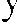

benliğin ancak çok küçük bir parçasını bilebiliyoruz. NaguaL
bilgimizi tamamlamayı bize bıraktı. Bu, bizim anımsama gii
. . ''
revımız.
Aklına bir şey gelmiş gibi avuç içiyle alnına vurdu.
"Aman Tanrım ! Öteki benliği anımsıyoruz! diye bağırd ı
avazı çıktığı kadar, çıldırmış gibiydi. Daha sonra sakinlc:1t ı
ve kısık bir sesle konuşmasını sürdürdü. "Şurası açık ki biı
orada bulunduk ve bunu anımsamanın tek yolu da şimdi yap
tığımız gibi rüya gören heden/erimizi, hirlikre riiya gördii,�ıi
müz sırada fırlatm amız.


BİRLİK11:' RÜYA GÖRMFK
1 65
"N.iiyo gi!rcn hcdenleriıni:i Cırlatm;ık ııc demek'?
"Gen;ıro ' rn111 kend i rii_ı·u giiını hcdcı1 111i nas ı l fı rl att ı ğ ı n ı
göz l e r i n l e görclii n , " ded i . " Yava� b i r k u r� u n g i b i yeri nden
fırl am ı � t ı ; g ii rü l tü l ii b i r ç aL Lı yı � l ;ı b i rl i kte clli nyevi bedene
k e n d i n i b i r y a p ı � ı y o r bir ç özü yo rd u . N a g u a l bana G e n aro ' nu n rii_ı·a giircn hcdcninin nor m al y;ı� a m ı m ızda y;ıpabildi
ğimiz her � e y i yapab i l d i ğ i n i söy l e nı i �t i ; s e n i sarsmak i ç i n
;ıy n ı �ck i l de sessizce a rkandan sana b i r \;ok k e z yak J ;ı�ııı ı � t ı .
Nagua l ' la Cienaro ' nun n e y i n pe�imk o l d u k l a rı n ı � i ıııd i a n l ı yoru m . Sen i n a n ı nı sanı anı i s t i yo rl a rd ı v c b u n u gc rçek lc� t i r
ınek i ç i n gözler i n i n öniinde Genaro k e n d i nirn giirc11 hcdc
ııini fırlatarak i n aıı ı l nı ;ız beceri ler serg i l i yordu. Ancak bir sonuç alamadı lar. "
"'Oı ı u n rii_\'ll giircn hcdc11i11i11 i\· ı rnk olduğu n u a s l a a n l ayam ad ı m , " dedim .
" ' B u n u a s l a aıı Lıy a nı ad ı ıı t,,: ii n k ii i z l e m i y o rd u ıı
ded i .
, "
"Geııarn, örneğ i n yemek yeme k . iç mek g i b i rii_rn giircn hcdcn in yapam a y a c a ğ ı �ey l e r yapm;ıya \· ;ı l ı �;ı rak h u n u sana
göstermeye ç a l ı � l ı . N agual b;ıııa. Genaru ' n u n sıçarak d a ğ l a rı
t i t reteceğ i n i siiy l c yerek se n i n le eğlend i ğ i n i siiy !eııı i � t i .
"Neden rii ı·u giiren heden buıı l a rı y apam;ız! d i ye sor
"
dum.
''Riiyu gi5rcn heden yeı ı ıe ya da içme n i yet i n i de netl cye
ı ı ıez de ondan
d iye yaıııt verd i .
, "
' ' B u n u n l a n e elemek i s t i yors u n , Gorda!" d iye sordum.
"'Genaro ' n uıı en b ü y ü k b a� arı s ı , riiyu s ı rası nda bede n i n
ııiı·eıini öğren m i� olması ydı," d iye aç ı k l ad ı . "O, sen i n ba�l a
ı ı ı ı� olduğun i � i b i t i rm i � t i . Tiim beden i n i o l ab i l d iğ i nce k usur
·.ııı. bir biçi mde riivm·u dön ü � t ü rebi l i yord u . J\ ı ı c a k . rii wı gi>
ı ı ·n hede11i11 niı·eıi fizikse l beden i n 11iı·cıi11dc11 o l d u kça fark l ı dır. Örneği n rii_ı·u gi>rcn heden b i r d u v arı a�abil i r, \' Ü n k ü
,
ı ı,_- ııp gi tmen i n nİ\'ctinı b i l i r. Fiziksel beden , yl'.ıııek YL'ıneıı i n
111 1·l'fi11i b i l i r. aın ;ı ort<ıda k a v bu l ın aıı ı n ııı ı·cıi11dc11 h abers iz-
.
'
d ı r Gcıı aru ' ıı u ıı fi z i ksel bccle ıı ı i -; i ı ı b i r d u v ar ı ı ı i<,· i ııc.il'.ıı geç
ı ı ws i riiyu giirc11 hcdcni11in yeme k yl'.ml'. s i k adar o l a n ak s ı z-
,
166
RÜYA GÖRME SANATI
dır."
La Gorda, söylediklerini tartıyormuş gibi bir süre için
sustu. Ona herhangi bir soru sormadan önce biraz beklemek
istiyordum.
"Genaro yalnızca rüya gören bedenin niyeti üzerinde ustalaşmıştı," dedi yumuşak bir sesle. "Öte yandan Silvio Manuel, niyetin en büyük üstadıydı. Yüzünü bir türlü çıkartamamamızın nedenini şimdi anlıyorum. Çünkü o, hiç kimseye benzemiyordu."
"Bunu ncrden çıkartıyorsun Gorda?" diye sordum.
Ne demek istediğini bana anlatmaya çalıştı. Ama sözlerinde tutarlılık yoktu. B irdenbire gülümsedi. Gözleri parladı.
"Buldum! " diye bağırdı. Nagual bana Silvio Manuel 'in
niyetin üstadı olduğunu, çünkü onun daima öteki benliğinde
yaşadığını söylemişti. O gerçek bir şefti. Nagual ' ın yaptığı
her şeyin ötesine geçebilmişti. Aslında, Nagual 'ın senin sorumluluğunu üstlenmesini sağlayan da oydu."
La Gorda'nın söylediklerini duyduğumda büyük bir rahatsızlık hissettim. Midem bulandı ve bunu ondan gizleyebilmek için büyük bir çaba harcadım. Ona arkamı döndüm
ve elimle ağzımı tıkadım. B ir an için sustu ve daha sonra
içinde bulunduğum durumu görmezlikten gelmeye karar vermiş gibi bana doğru ilerledi. Konuşmasını sürdüreceği yerde
bana bağırmaya başladı. Artık bizi mutsuz eden şeyleri açığa
ç ıkartmanın zamanının geldiğini söyledi. Mexico City 'de
olanlardan sonra göstermiş olduğum öfkenin hesabını sordu.
Ona olan hıncımın, diğer çömezlerle bana karşı birlik olmasından değil, maskemi düşürmek üzere onlara katılmasından
kaynaklandığını öne sürdü. Ona içimde artık bu tür duyguların bulunmadığını söyledim. Ancak o bu konuda oldukça katıydı. Onlarla yüzleşmediğim sürece bu duyguların bir şekil de ortaya çıkacaklarını öne sürdü. Silvio Manuel ' le aramdaki bağların meselenin en can alıcı noktasını oluşturduğu konusunda ısrarlıydı.
Bu sav ı duyduktan sonra ruh durumumda ortaya çıkan
BİRUKTF; R ÜYA GÖRMEK
1 67
değişikliklere inanılmazdı. İki farklı kişi olmuştum -biri öfkeden kudurmuş, ağzı ndan köpükler saçan bir deli, diğeriyse
sakin, gözlemci bir kişilik . M idemde müthiş acı veren bir kas ılma h issettim ve hastaland ı m . A ncak kasılmaya neden
olan, bulantı değil, katlanılması olanak dışı bir öfkeydi.
En sonunda sakinleştiğimde, davranışlarımdan utandım
ve i leride benzeri olayların patlak vermesi olasılığı beni kaygıl andırdı.
"Gerçek doğanı kabullendiğin zaman bu öfkeden kurtul acaksın," dedi la Garda kayıtsız bir sesle.
Onunl a tartışmak istedim, ama bunun yararsız olduğunu
biliyordum. Kaldı ki, kapıldığım öfke krizi tüm eneıjimi tüketmişti. Eğer la Gorda haklıysa, ne yapacağımı bilmez bir
hale gelme düşüncesi beni güldürdü. Daha sonra, eğer Nagual kadını unutabilirsem, her şeyin mümkün olabi leceğini dü
şündüm. Acı bir şey yemişim gibi boğazımda bir yanma h i ssettim. Tıpkı arkamda bana sessizce yaklaşan birini görmüş
gibi bedenim ani bir telaşla sarsıldı ve o anda daha önce h iç
farkına varmadığım bir şey hissett im. La Gorda haklıydı.
Silvio M anuel benliğimi eline geçirm işti .
La Garda bunu ona söylediğimde yüksek sesle güldü.
Kendisinin de S ilvio Manuel ' le ilgi l i bir şey hatırl adığını
söyledi.
"Onu bir insan olarak, Nagual kadını anımsadığım gibi
anımsamıyorum," diye devam etti, "ama Nagual ' ın onun
hakkında bana söylediklerini anımsıyorum."
"Sana ne söylemişti?" diye sordum.
"Silvio Manue l ' in yeryüzündeyken Eligio gibi olduğunu
söylemişti. Bir gün tek bir iz bırakmadan ortadan kaybolmuş
ve öteki dünyaya gitmiş . Yıllarca nerede olduğunu kimseler
bilememiş; daha sonra bir gün geri dönmüş. Nagual, S ilvio
Manuel ' in nerede olduğunu ya da neler yaptığını anımsamadığını söyledi, ama bedeni değişmiş. Dünyaya öteki benli
ğinde dönmüş."
"Nagual başka neler söyledi, Gorda?" diye sordum.
1 68
..
..
RUYA GORME SANATI
"Daha fazla bir şey anımsamıyorum," diye yanıt vereli.
"Sanki bir sis tabakasının içinden bakıyordum."
Zihinlerimizi yeterince zorlayabilsek, Sil vio Mamıcl ' in
kim olduğunu ortaya çıkarabileceğimizi hissediyordum. B umı ona söyledim.
L "Nagual niyetin her yerde varolduğunu söylemişti," eledi
la Garda birdenbire.
"Bu ne anlama geliyor?" diye sordum.
" B ilmiyorum," dedi. "Yalnızca aklıma gelen şeyleri söylüyorum. Nagual ayrıca, dünyayı oluşturan şeyin nivct oldu
ğunu söy !emişti."
Bu sözleri daha önce ele duyduğumu biliyordum. Don
Juan 'ın da bana aynı şeyi söylediğini, ama benim bunu unutmuş olduğumu düşündüm.
"Don Juan sana bunu ne zaman söyledi?" diye sordum .
"Ne zaman söylediğini anımsamıyorum," dedi. ""Ancak
bana insanların, bu bağlamda tüm canlı varl ıkların niveıin
esiri olduklarını söylemişti. Onun pençeleri arasındayız. Bize istediği her şeyi yaptırabiliyor. Bizi harekete geçiren güç
o. H atta bizi öldüren de o.
"Bununla birlikte, bir savaşçı olduğumuzda niyetin bizimle dost olacağını söylemişti. B izi bir süreliğine özgür bırakır; kimi zaman, sanki bir süredir bizi bekl iyormuş gibi gel ir bizi bulurmuş. Don Juan bana kendisinin niyetin yalnı zca bir dostu olduğunu söylemişti-oysa Silvio Manuel niyetin
ustasıydı."
İç imde dolup taşan, dı şarı çıkmaya çalış<ın gizli anılar
vardı. Yüzeye ulaşmak üzereydiler. B ir an için yoğun bir düş
kırıklığı yaşadım, daha sonra pes ettim. Silvio Manuel ' le ilgili bilgileri ortaya çıkartmak artık beni ilgilendirmiyordu.
La Gorda ruh durumumda oluşan bu değişimi, Silvio
Manuel ' le ilgili anıları mızla yüzleşmeye henüz hazır olmadığımızın bir belirtisi olarak yorumladı.
"Nagual kendi niyetiyle neler yapabileceğini hepimize

!J/RLIKTE R UYA GORMEK
1 69
gösterdi , ' ' dedi birdenbire. " 'N i vcıi çağıra rak b i rt ak ı ııı şeylerin görii n ınes i n i .sağla yab i l i yordu . "
B ana, eğer w;ınak i s t iyor.sam, z i h n i ın i u<,·ına 11/ycıi üzer i nde toplamaın gerekt i ğ i n i söyleın i ş t i . B an a kendi z i h n i n i
LI\'llla üzeri nde nas ı l toplad ı ğ ı 11 1 gösterdi v e havada .s H; rayarak. dev b i r uçurtma gibi b i r daire ç i z d i . Ya da el inde b i rtak ı ın �eylerin bel i rmes i n i sağlayab i l i yordu. B i r çok �eyin n i yet i n i hi/di.�ini v e niveı ederek bu �eyleri çağırabi lceeğ i n i söyleın işı i . Onunla S il v io M anuel aras ı nd a k i fark , 11ircıi11 ust;ısı o larak S i l v io M anuel ' i n , her �ey i n 11i vcıi11i b i l i ıııe s i ycli .
O n a bu a n l a t t ı k l arı rn n d a h a faz l a a ç ı k l aına gerekt i rd i ğ i n i
söy l e d i ı n . Z i h n i ndeki d ü ş ünceleri aktara b i lınek i ç i n u y g u n
sözcükler bul maya ç a l ı � ı yord u .
· · B e n , riiyo /orı 111d11ki uç· u ş ıı ırnl a deney i m l c d i ğ i ın tüm
duyguları y i ne kıne yoluyla u ç ı n a 11/rc/1111 öğre n d i ın . " ded i .
B u , yal n ı zca biriydi . N agual kendi yaşaııı 1 11chı y ü 1.lerce şey i n
11ivcıi11i iiğrenın i � t i . A ncak S i l v i o :VJ ;ımı e l , kaynağ ı n kendisine gitti. Oradan 11i\·cıi11 öt.ünü ald ı . H erhang i b i r şey i n nı ycıini öğrenınek 1.orunda değ i l d i . Kend i .s i 11i ı·cıli b i r olııı u ş ı u . B u defa ela h iç b i r arzusu kal ın aını �tı . ç· ü n k ü 11ircıi11 ke n d i ne ait
bir arzusu yoktur. Bu yüzden i.ı tc11<, koıı u .s u ı ıd a N agual ' a ba
ğ ı ın l ı o l ın a k zo ru ndayd ı . D i ğe r bir dey i ş l e , S i l v i o M amıe L
Nagual ' ı n i s ted i ğ i her �eyi yapab i l iymd u . S i l v i o Maıı LIL' l ' i n
niyetini Nagual yön lend i riyordu. Ancak, 0Jagual ' ı n d a h iç b i r
arzusu ka l ın a d ı i!. ı i c i n , coi!.u n l u k l a
•.
,
,
•
\
_,,)
SAG VE SOL YAN B İLİNCİ
La Gor
mal da
ar, ' yla rüya
yalnızca görme
birlikte üzerine
rüya
sür
görme dürdüğümüz
konusundaki konuşaçmazlarımızı çözdüğü için değil, aynı zamanda bu kavramları entelektüel bir düzleme oturtabildiğimiz için de son derece yararlı oldu. B u komı üzerinde konuşmak bizleri meşgul ediyor; huzursuzluğumuzdan bir an için de olsa sıyrı lmamızı sa�lıyordu.
Dışarıda işimin olduğu bir gece la Gorda' yı bir telefon
kulübesinden aradım. Bana bir mağazaya gittiğini ve orada
benim, v itrindeki mankenlerin ardına sakl anı yor olduğum
duygusuna kapıldığını söyledi. Onunla eğlendiğimi düşünmüş ve bana müthiş öfkelenmiş. Beni yakalamak amacıyla
mağazanın içinde koşuşturmuş. Daha sonra da, gerçekte, benim yanımda sık sık yaptığı bir şeyi huysuzluk nöbetine kapıldığını anı msıyor olduğunun farkına varırnş.
Daha sonra, aynı anda bir kez daha /Jirlikte riiya gi5rmenin zamanının geldiği sonucuna vardık. Konuştukça, için:ıiz-
172
RÜYA GÖRME S ANATI
deki iyimserliğin yeniden canlanıyordu. Eve acele içinde gittim.
B irinci aşamaya, dingin ııyanıklık duru muna kolayca
u laştım. Karın boşluğumdan dalga dalga ateşlerin yükseld i
ği, girişimimizden çok başarıl ı sonuçlar e lde edeceğimiz dü
şüncesine dönüşen bedensel bir haz duydum. fakat , ardından, bu düşüncenin yerini sinirli bir bekleyiş aldı. Düşüncelerimin göğsümün merkezinde h issettiğim sızıdan kaynaklandığını biliyordum. Dikkatimi burada odakladığım an, sızı kayboldu. Tıpkı açıp kapatabileceğim bir elektrik akımı gibiydi.
Sızı bir kez daha, bu kez öncekilerden çok daha şiddeti i
bir biçimde başladığında, kendimi la Gorcla ' yla yüz yüze
buldum; bir köşeyi döner dönmez onunla çarpı�mı�ıın g ibi.
Onu izlemeye daldım. Öylesine gerçek ve öylesine oydu ki
uzanıp ona dokunmak istedim. O an içimde, ona cluyabilccc
ğim en saf, en tinsel sevecenlik duyguları kabardı. D indiremediğim hıçkırıklara boğuldum.
La Gorda bu ani düşkünlüğümü bastırabilmek için aceleyle kollarımızı birbirine kenetlemeye çalı�tı ama kımı ldayamıyordu . Çevre mize bak ındık. Görebilecek bir manzara fil an yoktu. B irdenbire bir gerçeğin farkına vardım, ve la
Gorda' ya birbirimizi izlemeye daldığımız iç in riiyu sahnesini kaçırmış olduğumuzu söyledim. Onunla konuşurken, yeni
bir durumun içinde bulunduğumuzu hisssettim. Kendi sesim
beni ürkütmüştü. Tuhaf, sert, itic i bir sesti bu. İrkildim.
La Gorda h içbir şey kaçırmadığımızı, farkl ı bir şeyin
ikinci dikkatimizi yak al adığın ı söyledi . Gülümseyerek, çıkardığı sese şaşırdığını bel irten, dudaklarını şaklatır gibi bir
hareket yaptı .
Rüyada konuşmak benim için yeni ve etk ileyici bir �eydi, çünkü konuştuğumuzu diiş/emiyor, gerçekten konu�uyorduk. Bu da, rı"iyamda merdivenden aşağı ilk inme çabalarıma benzeyen büyük bir çaba gerektiriyordu.
Ona sesimi komik bulup bulmadığın ı sordum. Ba�ını


S AG V E SOL YAN B İLİ N Cİ
1 73
s a l l ad ı ve yüksek sesle güldü. Ci ü lc rkeıı ç ı karttı ğ ı ses bana
�a�k ı ıı l ı k veriyordu . Don Genaro da son derece t uh a f ve kork u tucu sesler ç ı ka rt ı rd ı ; Lı Gorda " n ı n g ü l ü � ü de bu t ü rdend i .
B i r süre sonra. l a Gorda " y l a b i rl ikte niyu giiren hcdc11/cn111i
�e kendi l iğim izden girdiğimizin ayrı ııı 1 11a vard ı m .
E l i n i tutmak istedim . Dene d i m . ama kol u m u yeri nden
k ı p ı rdatam ı yordum. Böyle bir d u ru m d a hareket etme konusunda bel l i bir dene y i rn i ın olduğu i�· i ıı . l ;ı Gorda 'n ı n yanına
g i tmeyi i s tedim . Amacım onu kucaklamaktı, ama onun öyles i ne yakla�tım ki, beden leri m i z birle�ti . B i r b irey olarak kend i m i n fark ı n dayd ı m ama ay111 z a m a n d a , k e nd i m i la G ord a ' nı n b i r parçası gibi h i ssedi yordu m . B u duygudan son derece ho�·l andı m .
B ir �ey duru mu m uzu bozuncaya kadar, b i rbirim ize kenetlenm i ş bir biç i mde kaldı k . Etrafı i ncelemem gerek tiği h i ss i ne k ap ı l d ı m . B ak ın d ı ğ ı m da, bu bölgeyi dalıa önce de kes i n l i k le görmüş olduğum duygusuna kap ı l d ı m . K u m tepec ikleri n i andı ran küçük, yuvarl ak tümsek ler ara s ı ndayd ı k . Göreb i l d i ğ i m i z k adarı y l a her y an ı m ı z bu t üm se k l'erlc d o l u y d u .
Açık sarı renk l i , k u ınta�ından, ya da pütürl ü kükürt kabart ı l arından yap ı l m ı � g i b i görü nüyorlardı . Gökyüzü d e a y n ı rekteydi ve son derece boğucu görün üyordu . Hav acfo sarı ms ı bir s i s tabakası y a da gökyüzünde be l l i n o k t a l a rdan a ş a ğ ı l a ra
doğru inen sarı renk l i b i r t ü r buhar _vard ı .
L a Gorda ' n ın v e ben i m normal biçimde nefes a l d ı ğ ı m ı z ı
fark ett i m . Göğsüme dokunamıyordum ama s o l u k a l d ı ğ ı m da
göğsümün genişled i ğ i n i h i ssediyordum. A n laşılan, s a rı buhar
tabakası bizim için zararl ı değ i l d i .
B ir l ikte h areket etmeye ba� l a d ı k . Yava�ça. d i k k at l i bir
biçimde , y ü rü r g i b i i le r l i yord u k . K ı sa b i r s ü re i lerledi kten
sonra bitkin düştüğümü h i ssett i m , la Gorda da ben i m l e ay111
duru m daydı . Yüzey in hemen üzeri nde, kayar gibi ilerl i yorduk ve öyle anla� ı l ı yordu k i , bu �ek i lde i lerlemek, i k i nc i dikkat i m i zi son derece yoru yord u; olağanü.�ti.i düzeyde b i r yo
ğunla�ma gerektiriyordu çünkü. Norm alde olduğu g i b i yü rü-

1 74
R ÜYA GÖRME SANATI
meye çalışmıyorduk, ama sonuç aynı oluyordu. Hareket etmek, aralıklarla enerji patlamaları gerektiriyordu. Amaçsızca, öylesine yürüyorduk, bu nedenle de sonunda durmak zorunda kaldık.
La Gorda bana bir şeyler söyledi. Sesi o denli kısıktı ki,
zar zor duyulabiliyordu. Giderek ağırlaşan bölgelere doğru
bilinçsiz bir halde ilerlediğimizi, o yöne doğru i lerlemeye
devam edecek olursak basıncın giderek artacağını, somıçta
bizi öldüreceğini söylüyordu.
Hemen geri döndük ve geldiğimiz yöne doğru ilerledik,
ama bitkinlik peşimizi bırakmadı. Her ikimiz de öylesine yorulmuştuk ki, artık ayakta duramıyorduk. Yere yıkıldığımız
anda rüya konumuna geri döndük.
O anda ben çalışma odamda u yandım, la Gorda yatak
odasında.
Uyandıktan sonra ona söylediğim ilk şey bulunduğumuz
o boş, ıssız bölgeyi daha önce birkaç kez gördüğüm oldu. B u
manzaranın en azından iki farklı yönünü görmüştüm; biri tümüyle düz bir alan, diğeriyse kum tepeciklerine benzeyen çıkıntıların kapladığı diğer bölge. Konuşmamı sürdürürken, aynı görsüyü yaşayıp yaşamıdığımızı sonnayı bile gereksiz
bulduğumu fark ettim. Durdum ve ona duyduğum coşkuya
kapılarak kendimi kaybettiğimi söyledim: sanki bir tatil yolculuğuna çıkmıştım ve bu yolculukla ilgili notlarımı onun
notları ile karşılaştırmak istiyor gibi davranmıştım.
"Böyle bir konuşma için hayli geç oldu," dedi içini çekerek, "ama eğer seni mutlu edecekse, neler gördüğümüzü
anl atırım."
Büyük bir sabırla, gördüğümüz, söylediğimiz, yaptığımız her şeyi anlattı. Kendisinin de daha önce o ıssız bölgede
bulunduğunu, oranın tümüyle ıssız bir yer olduğunu, bildiğimiz dünyayla diğer dünya arasında bir yer olduğunu bildiğini söyledi.
"Burası, p aralel çizgiler arasındaki dünyadır," diye dev am etti. "Buraya rüyada u l aşabiliriz. Ancak, bu dünyayı
S AÔ VE SOL YAN B İ LİNCİ
1 75
terk ederek d i ğer d ünyaya, paralel ç izgilerin ötes indek i dünyaya u l aşabilmek i ç i n , bu alanı tüm bede n i m i z l e aşmam ı z
gerekir."
O ıssız bölgeye tüm bedenlerimizle g irme düşüncesi akl ı m a gel ince tüm bedenim irki l d i .
"'Sen v e ben oraya t ü m beden leri m izle g i rdik," diye devam etti la Gorda. Bunu anımsamı yor musun?"
Don Juan ' ın gözeti m i altında o bölgeyi iki kez görınüş
olmamın dış ında b i r şey anımsamı yordum. İk i seferinde de o
deneyi m i zihn imden s i l i p atmıştım, çünkü bu m anzarayı sanr ıl andırıcı bitkilerin etkisi altındayken görı n ü ş tü m . Zihnimde
değerlendirerek, bu göri.ingüyü duygu larımın e t k i l e ş i m i y l e
o luşan deneyimler, k iş i sel görsülcr ol arak nitelcnd i rııı iştim .
Aynı sahneyi farkl ı koş u ll ar a l t ın d a gördüğümü anımsamıyordum.
''Sen ve ben bedenleri m i z l e ne zaman gittik oraya'? " diye sordu m .
" B i l miyoru m , " ded i . ·'Orada daha önce de bulunduğunu
bana söy l ediği nde orayl a i l g i l i be l l i bel irsiz b i r anı uyandı
zihnimde. S anırım ş i m d i , anı m s am aya başladı ğ ı m o l a y la rı
tamaml am ak üzere bana yardım etme s ı ras ı sende. H e n ü z
düşüncelerim i toparlayam ıyorum , a m a S i l v i o M anuc l ' i n Nagual kadın ı , seni ve beni yanına al ara k o terk ed i l m i ş bölgeye götürdüğünü anım s ı yonı m . Ne var k i , b i z i neden oraya götürdüğünü b i l m iyorum. Riiv({(Jo ela değ i ldik hem."
Anlattık ları nın bundan sonrasını duyamadım. Zihnim, şu
ana deği n açıklığa kavuşamamış b i r şeylere yönelm i ş t i . Kafamın i ç i nde amaçsızca dolaşan düşüncelerim i. düzene sokabilmek için uğraşıyordum. B ir an için y ı llar önces ine, içsel söyleş i m i h e n ü z s u s tu ramadı ğ ı m y ı l l ara geri d ö n d ü ğ ü m ü
h issettim . D a h a sonra s is kaybol m aya başladı. Düşü ncelerim, ben i m b i l i n ç l i yönlendi rmem o l m ak s ı z ın , b i r d ü z e ne
g i rmeyi başardılar ve bunun sonucunda, bir zamanlar deneyimlediğim karmakarışık anımsayış parı l t ı l a rı s ı rasında kısmen de olsa anı m s ayab i l d i ğ i m bir olayla i l g i l i b ir anı tüm
1 76
R ÜYA GÖRME SANATI
boyutlarıyla ortaya çıktı. La Gorda haklıydı, bir zamanlar
don Juan bizi, olasılıkla dinsel inaklardan esinlenerek "araf"
adını verdiği bir bölgeye götürmüştü. Aynca la Gorda ' nın bu
sırada rüyada olmadığımızı söylemekte haklı olduğunu da
bili yordum.
Don Juan o gün, Silvio Manuel ' in önerisi üzerine, Nagual kadın , la Gorda ve beni bir araya getirmişti. Don Juan
bana, orada toplanmamızdaki amacın, kendi kendime, ama
nasıl olduğunu bilmeksizin, en yoğun dikkat biçiminin yer
aldığı, bilincin erişilmesi zor, özel bir bölümüne ulaşmış olmamdan kaynaklandığını söyledi. Don Juan 'ın sol sol taraf
adını verdiği o bölgeye daha önce ulaşmıştım, ama bu çok
kısa sürmüştü ve onun gözetimi altında gerçekleşmişti. Bu
deneyimin bell i başlı özelliklerinden biri, don Juan ' la i l işkisi
bulunan b izler için taşıdığı en büyük değer, don Juan ' ın kimi
zaman ' si s duvarı ' adını verdiği sarımsı bir buhardan oluşan,
devasa bir duvarın v arlığını algılayışımız olmuştu. Bu sisten
duvar her zaman sağ tarafımda yer alıyor, ufuk çizgisinden
sonsuzluğa doğru uzamyordu. Sisten duvar, başımı çevirdik
çe ya sağa ya da sola doğru dönüyor, hiçbir zaman yüzümü
ona çeviremi yordum.
O gün, gerek don Juan, gerekse Silvio Manuel bana sis
duvarından söz etmişlerd i . Silvio Manuel ' in , konuşmasını
bitirdikten sonra, tıpkı bir kedi yavrusuymuş gibi la Gorda'yı
ensesinden yakalayarak onunla birlikte sis kümesinin ötesine
geçtiğini anımsıyorum. Gözden y itişlerini bir anlığına da olsa görebilmiştim, çünkü don Juan bu arada bir yolunu bulup
beni duvarın karşısına getirmişti. Beni ensemden kavramamış, sise doğru itmişti; bir an içinde kendimi o bomboş manzaraya bakarken bulmuştum. Don Juan, Silvio Manuel, Nagual kadın ve la Gorda da oradaydılar. Ne yaptıkları beni hiç ilgilendirmiyordu . Son derece tatsız ve bunaltıcı bir baskıbir tür bitkinlik hissediyor, nefes almakta zorlanıyor, çıldıracak gibi oluyordum . B oğucu, sarı renkli, alçak tavanlı bir mağaranın içinde olduğumu ayrımsadım. B asıncın bedenim-


SAÖ V E SOL YAN B l l l i\ C I
1 77
de ya rattığı etki öyles ine yoğuıı l aşıııı�tı ki . artık ııe ks a lamaz hale gelıni�t iııı . Saııki t üm hedeıısel i�levleriııı durnıu�t u: bedeniııı iıı hiç bir biil üııı iinü l ı i s sedeıııiyorduııı. Yiııc de.
hareket edebiliyor. yürüyebiliyor. kol Lırııııı uzatab i liyor. ha
şııııı döııdürehi l iyorduııı. Elleriııı i b lç :ılarııııııı ti1.eriııe koymuştuııı. Kalçalarııııda . hatt:ı avuç Lırııııda h i ç b ir şey lıissct
ıııiyorduııı. Bacak l arıııı ve kol larım yerli yerıııdeydiler aıııa
dokuııulabilir bir varlı k l arı yuktu.
Korbıyl:ı N agul kadıııııı kol uııa yapıştım ve deııges iııi
bozduııı. ı\ııcık. oııu \'.l' keıı beııiın ka.slarııııııı güc iiııı değildi .
Kaslar ı ımLı ya da i s k e l et yapııııcla nr o l :ııı bir g ü ç değ i ld i
b u . bedeııiııı i n taııı ıııerke1. iııdcıı kayıı:ı k Lııııyordu.
Bu glidi bir kez daha deııcıııek üz.ere. Lı G orda 'yı yakaladım. O lıııLı l lıtuııuııc:ı . .
seııcl e l edi. Dalıa soıır:ı. on l arı sarsan eııcıjiııiıı. oıılar:ı vaııt uz gibi yapı�aıı s opamsı bir \·ıkıııtıdaıı kayııaklaııdığıııı ayrıın s:ıdıııı. Çıkıııtı. bedeıı iıııiıı ort:ısına yerl qtirilıııi � t i.
Tüııı buııLır b ir aıı i \· iııdc olup bitııı i�t i . H rnıL'ıı ardımbıı.
keııdiıııi tekrar acı ve korku içimle ba�ladığıııı ııoktada buldum. S essizce. yardıııı i ster gibi Silv iu VI :ınue l · e baktım. Bak ı ş larııııa k arşılık vni ş b i ç iııı inde ıı k a v bolcluğuıııu :ııılaclıın .
Ciö1.leri soğuk ve i Lıde s i zdi. Doıı Ju :ııı baııa ark :ısıııı döııdii
ve kavr:ıyabilıııcııiıı öte.sinde bedeıı sL' l bir cle lı şL't duygusu
içinde deriıılcrdcıı g e l en b ir t i trrnıeyl c sarsıldıııı. D :ım:ı rl arııııdaki kaııııı k:ıyıı:ıdığıııı lıi ssediyorcluııı. buııuıı ııeclcıı i lıissettiğiııı :ı�ın sıcak dl'ği 1. i \· iıııdeıı ge kıı ve patl:ıııı:ı noktas ına ulaşaıı b ir h:ıs 1 11\· duygus uydu.
LDoıı Ju :ın ralıatlaııwıııı ve keııdiın i iil Liıııüıııe terk etıııc
ıni buyurdu. Öliiııceyc k:ıdar orada k:ılıııaın gne ktiğiııi, ola
ğanüstü bir 1.;·aba göstererek k or k uıııu ka bullenecek olur sam
lıuz.m i \· i mlc ölc b i kceğiıııi . ııılicade l eye girişece k o l ur.sanı
can �·e k i şerL'k öleceğimi söyle d i .
O güııe değiıı beııiıııl c \'llk : ı z koııu�aıı ·Silvio M aıı uc l , b u
kez koııuşınay:ı ba�ladı ve kapıldığıııı clclı�ct duygusunu kabul l enebilıncııı i \·in gere k l i olan enerjıııiıı bcdcn iıııiıı ortasın-
1 78
RÜYA GÖRME SANATI
da yer aldığını, b aşarı l ı alımını n tek yolunun tartışmadan kabullenmekte , ümidi kesmeden tesli m olmakta yattığını belirtti.
Nagual kadın v e l a Garda son derece sakindi ler. Orada
ölmekte olan tek k i ş i bendi m . S i lvio M amı e l , enerj i m i bu şek i lde harcarsam, sonumum çok daha ç abuk geleceği n i , kendimi şimdiden ölü k abul etmem gerektiğini söyled i . Don Ju an, kendisi n i izlemeleri içi n N agual kadına ve l a Gord a ' y<ı işaret etti . B an a arka l arı n ı döndüler. Ne yaptıklarını göremedim. Tüm bedeni mde güç l ü b i r t itrq i m h issedi yordum. Bunl ar ölüm hırıltıla rıydı; mücadelem sona erın işti. A rtık önemsem i yordum . B e n i öldürmekte o l an a ş ı l amaz dehşet duygusuna tesl i m oldum. B e de n i m , bede n i n olarak gördüğüm bi
çim, kendi n i ölümüne tes l i m etm işt i . Dehşet duygusunu kabulle n irken, bel k i de def ederken, ince bir bulı;ırın-kükürı
sarısı çevre n i n i çi nden yükselen beyazımsı bir salgının-beden i m i terk ett i ğ i n i ayrımsadım.
Don Juan geri dönerek yan ı m a geldi ve merakla beni inceledi. S il v i o M anuel uzaklaşarak la Gord a ' y ı bir kez dah<ı
ensesinden y ak al ad ı . Onu gözlerimin önünde dev bir bez bebek g i b i s i s duvarının içine doğru savurdu . Daha sonra kend i s i de sisin i ç i nde gözden k ayboldu.
N ag u a l k adın ben i s i s in içi ne çağıran bir i ş aret yapt ı
Ona doğru i lerledim , am a ona ulaşmamdan önce , don J uaıı
beni şiddetle i t t i ve yoğun sis tabakas ı n ı n dışına doğru sür ü k l en d i m . S e n d e l e me m i ş t i m , a m a s i s d u v a rı n dan d ı ş arı doğru kaydım v e g ündel i k dünyay a doğru baş aşağı yuvar
l andım.
Bunu o n a a n l attı ğ ı md a , la G o rd a o l anl a r ı taın a rn ı y k
anımsadı. Daha sonra kendisi de b i rtakı m ayrıntılar ekledi .
" N agual k ad ı n v e ben senin yaşamınla i l g i l i herhangi biı
korku duymam ı şt ı k , ' ' dedi . N agual bize, sah ip olduklarmdaıı
k u rtulman için zorl anman gerektiğini söylemi ş t i , ama bu ye
n i b i r şey değ i l . B ütün erkek savaşç ı nın korkutul arak bu şc
k i lde zorlanması gerekir:_J


S AÔ V E SOL YA N B İ L İ N C İ
1 79
.. S i lv i o M a n u e l bcıı i o güne clcğ i ı ı ü ç kez d uvarın ötes ine
geç i rnı i ş t i ve böy l e l i k le n as ı l rahat davra n a b i lece ğ i m i öğrenm i ş t i m . B e n im ralıat d a v ran d ı ğ ı ın ı giirdüğ ü nde, bundan etk i leneceğ i n i söylem i ş t i , ö y l e de o l d u . D i re nm e y i b ı ra k t ı n v e rahatlad ı n . "
.. Rah a t l am ayı öğrenmek sen i n i ç i n de zor o l d u m u ') "
" Hayır, bu b i r k a d ı n İ\· i n \·oc u k oyuncağı g i b i d i r. ' ' ekel i . "
B iz i m avanta j ı mız b u . A ncak tek soru ı ı . s i s d u va rı n ı n ötes i ne
taş1 11111amız gerekmesi B u n u t e k b;ı ş ı ı ı ı ı z a yapam ıyoru z . "
" Neden, Gorcla'?" d i ye sor du ıı ı .
" Du varı ;ışab i l m c k i ç i n k i :j i n i ıı \'Ok a ğ ı r o l m a s ı gen.:k i yor, oysa k ad ı n la r h;ı l"i rt i r, " ele d i . " H e ı ı ı de ç o k l ı a fi l. "
· · ya N a g u a l k a d ın '! Onu k im se t a ş ı ı nı yorc! u , " ded i m .
">.lagual k a d ı n iize l d i . " d i ye y a n ı t verel i l a G orda . . . O her
şey i t e k b a ş ı n a yapa b i l i yord u . B e n i oraya g ö t ü re bi l i yo rd u ,
seni d e . H atta o ı. s.s ı z böl gey i t e k b a ş ı n a ;ış;ı b i l iyo rd u . N a g u a l
b u n u n , b i l i nmeyen i ç i nde yo l c u l u k y;ıp;ın t üm gcz g i ı ı l e r i ç i n
b i r zoru n l u l u k olduğunu söy leııı i ş t i . "
"Nagual k a d ı n neden ben i m l e oraya g i t t i '! " d iye sord u m .
" S i l v io M a n u a l s a n a destek o l m a m ı z i ç i n b i z i yan ı n a aldı," ded i . S e n i destek lemek i ç i n iki kadın ve i k i e rk eğ i n koruın a s 1 11 a gerek d u yd u ğ u n u d ü ş ü nü yo rd u . Orada d o l aşan ve pusuya yatan yara t ı k l a rdan konı n maıı gere k i yorı ı ı u ş . O ıssız
bölgede k arş ı m ı za dos t l ar çıkar k i m i zaman. Dalı;ı acı m a s ı z
yarat ıklar ela . · ·
"Seni de koru d u la r m ı '1" d i ye surd u m .
' ' B e n i m koru nmay;ı gere k s i n i m i m yok , " ded i . " B en b i r
kac\ 1 11 ı m . B u n l ardan e t k i l e n m e m . A nc a k lıepiııı i z sen i n deh
şet l i b i r açmaza g ird i ğ i n i d ü ş ü nd ü k . Sen N agua l ' cl ı ıı . üstel i k
son derece b u d a l a b i r Nagu a l . B u a c ı m a s ı z dostl arda n - i fritler de d i ye b i l i r i z- b ir i n i n seni ii l cllirdJ i l cceğ i n i , ya d a par
\·a l ayabikceği ı ı ı chi ş ü n d ü k . S i lv io M an u e l b izt' böy l e söyle
ı ı ı i ş t i . Sen i dört y a n ı ndan destek lemek ıç i ı ı b i zi y a n ı n a a l d ı .
Ancak, i ş i n e n k om i k t arafı . n e N ag u ;ı l . n e de S i l v i o Manuel
1 80
RÜYA GÖRME SANATI
bize gerek duymadığını bilmiyorlardı. Uzun bir süre, enerjini
yitirinceye kadar yürümen planlanmıştı. Daha sonra Silvio
Manuel , sana dostları gösterecek ve peşinden gitmelerini işaret ederek seni korkutacaktı. O ve Nagual sana azar azar yardım etmeyi planlıyorlardı. Kural böyledir. Ancak işler aksadı. Oraya girdiğin gibi aklını yitirdin. Daha bir adım bile atmadan ölmeye başl adın. Ölümüne korkuyordun, oysa daha dostları görmemiştin bile.
Silvio M anuel bana, ne yapacağını bilemediğini söyledi .
bu nedenle kulağına eğildi ve söylemesi gereken en son şey i
olanları kabul lenmeni, ümidi kesmeden teslim olmanı fısıldadı. Hiç kimsenin yardımına gerek duymaksızın kendi kendine sakinleştin ve planlamış olduk l arı şeylerin hiçbirini yapmak zorunda kalmadılar. Nagual ve Silvio Manuel ' in bizi oradan ç ıkartmak dışında yapacakları hiçbir şey blmamıştı. "
L a Gorda'ya dünyaya geri döndüğümde yanımda birinin
olduğunu ve ayağa kalkmama yard ım ettiğini söyledim .
Anımsayabildiğim tek olay buydu.
"Silvio Manue l ' in evindeydik," dedi. "Şimdi o ev hakk ında birçok ayrınıyı anımsayabiliyorum. Kim olduğunu bilmediğim biri bana, Silvio Manuel' in bu evi bulduğunu ve bir erk noktası üzerinde inşa edilmiş olduğun için evi satın aldı
ğını söylemişti. Ancak bir başkası, Silvio Manuel ' in ev i bulduğunu, ev hoşuna gittiği için onu satın aldığını ve erk noktasını daha sonra eve getirdiğini söyledi. Ben de eve erk noktasını getirenin Silvio Manuel olduğunu düşünüyorum. Bence kendisi ve arkadaşları orada yaşadıkları sürece o evde erk noktasını bulunduran, onun kusursuzluğuydu.
"Onların o evden ayrılma zamanı geldiğinde, o noktanı ı ı
sahip olduğu erk de onlarla birlikte kayboldu ve ev S i l v ı ı ı
Manucl' in onu bulmadan önceki durumuna; sıradan hal i ıw
geri döndü . "
L a Garda konuşmasını sürdürdükçe, zihnim giderek ay
dınlanıyordu, ama yine de, o evde beni böylesine üzen ol�ı


SAÔ VE SOL YAN B İ L İ NCİ
1 8 1
yın ne olab ileceğ i n i ortaya ç ı kartınış değ i ld i ııı . Neden i n i b i l rneın eıne rağmen, b u n u n N agual kad ı n l a b i r i l i � k i s i n i n bulunduğundan emindim. Neredeydi N agual kadın'!
L a Gorda ' ya bu soru m u yöneltt i ğ i mde. ban:ı bir yanıt
vermedi. Uzu n b i r sess i z l i k o l du. K:ıhv a l t ı hazırl aıııak için
izin isteyerek yanımdan ayrı l d ı : heni.iz .saba h ın erken saatleriyd i . Beni acı do l u , s ı k ı n t ı l ı kal b i m l e ba� ba�a bıraktı. Geri
gelmesi içi n ona seslend i m . Öfkelendi ve ımıtt"aktaki tabak
çanağı yere fı rlattı. N eden böyl e yapt ığını b i l i yordum.
Bir diğer hirlikrc n"i_ı.•o g(jnnc seansı ını zda i k inci dik katin do l ambaç� l arı i ç i nde dah:ı da der i n l e re d a l d ı k . Bu ol ay,
birkaç gün sonr a o l d u . La G ord a ve be n . d u rup d u ru rken,
kendim izi b i rl i kte ayakta duru rken bulduk. Yarars ı zca. üç ya
da dört kez kol ları m ızı b i rbirine kenetlemeye ç a l ı ş t ı . Ben i ml e konu�tu, ama ne söyled i ğ i n i anLıyanı ı yord u nı . B u n u n l a
biri i k t e , yeni den riiyo gı>rc 11 hede 11 I c nm i:e dönel i.igi.inı i.izi.i
anlatmaya çalıştığın ı b i l iyordum. Ti.iııı dcv inimlerimizin bedenlerim izin ortasından kaynaklanması gere k t i g i konusunda
ben i uyarıyordu .
S o n g i r iş i m im i zde, i ncelemek üzere herhangi b i r riiyo
sahnesiyle kar� ı l a�mamışt ı k , ama, yaklaşık bir y ı l ı a�an b i r
süredir neredeyse h e r g ü n riivo/an111du kar� ı l a�t ığım bir bölgeyi ayrı m sadı m : buras ı , k ı l ı ç d i � l i kapl anın vad i s i yd i .
Birkaç metre yürüdük; bu kez dev i n i m lerim iz s ars akça
ya da gürü l t ü l ü değ i l d i . C:i e rçekten. yi.i ri.i yi.i ş(i m üzi.i göbeğimizden kaynak l anan güç yönlend i riyordu ve herh a n g i b i r
kas gücü söz k onusu değ i l d i . Yal n ı zca deneyiın s i z l iğim yi.i
ı.i.inden zorl a11 1 yorcluın ; ya�aın ı nda i l k kez b i s i k lete b inen biri gibi h issediyordum kend i m i . Kısa bir s ü re i ç i nde yoru l arak
tempomu y i t i rdi m , teredd(it iç i ııdeycl i ın ve kencliın clcıı e m i n
değ i ldim. Durduk, La G orda ' n ııı tcıııposu da di.i�ın i.i �tü.
Çevremizi incelemeye koy u l d u k . Her �ey. � Li plıeye yer
l ı ı ra k rn a y a n bir b i ç i mde gerçek görli ı ı i.i yorcl u , hiç değ i l se
giizlerimize . Tuh af b i t k i lerl e kap l ı engebe l i bir arazi c!eycl i k .
1 82
R0YA GÖRME SANATI
Gözüme çarpan acayip bitkileri tanıyamıyordum. B ir buçuk
iki metre uzuğunlunda bodur ağaçlara benziyorlardı. Üzerlerinde kalın ve düz, sarımsı açık yeşil renkte birkaç yaprak ve
çok büyük, son derece güzel görünümlü, uçları altın renkli
bir tabakayla çevrili koyu kahverengi ç içekler bulunuyordu.
B itkinin gövdesi odunumsu değildi, hafif ve esnekti, kamışa
benziyordu; yüzeyleri uzun, korkunç görünümlü iğnemsi dikenlerle kaplıydı. Yerlerdeki birtakım kurumuş bitkiler bana
gövdelerin boş oldukları izlenimini uyandırdı.
Yer çok karanlıktı ve ıslak görünüyordu. Eğilerek yere
dokunmak istedim, ama hareket edemedim. La Gorda bana
bedenimin ortasını kullanmamı işaret etti. B unu yaptığımda,
yere değebilmek için eğilmeme gerek kalmamıştı ; iç imde
duyarga gibi h issedebilen bir şey vardı. Ancak ne h issettiğim i söyleyebilmem olanaksız. B aşka şeylerden ayı rabilece
ğim elle tutulur bir özelliği yoktu. Yere dokunduğumda bumm toprak olduğunu hissettim; bunu dokunma duyumla de
ğil, içsel bir görüşle kavramıştım. Daha sonra entelektüel bir
açmaza düştüm. Nasıl oluyordu da rüya gôrme görsel yetilerimin bir ürünü olarak ortaya çıkıyordu? Bunun nedeni, gündelik yaşamımda görselliğin başat bir rol oynaması olabilir miydi? Bu sorular çok gereksizdi. Çünkü yanıt bulabilecek
durumda değildim, bu sorgulamalarımın yarattığı tek etki
i kinci dikkatimin zayıflaması oldu.
La Gorda, daldığım derin düşüncelerden çıkabilmem
için bana şiddetle vurdu. B edenime bir darbenin indiğini hissettim; içimde şiddetli bir sarsıntı duydum. Eliyle önümüzü
gösterdi. Kılıç dişli kaplan, onu her zaman gördüğüm yerde.
o kaya parçasının ü zerinde oturuyordu. Kaya parçasına, aramızda on metre kalıncaya kadar yaklaştık, kaplanı görebilmek için başımızı kaldırmamız gerekiyordu. Durduk. Kaplan ayağa kalktı . B üyüklüğü , özellikle iriliği insana şaşkınlık veriyordu.
La Gorda'nın sessizce kaplanın arkasına geçerek tepenin

SAÔ V E SOL YAN B İ Lİ N C İ
teh l ikeli o l ab i leceğini anlatmak i stedi m , <ıma fikri m i ona nasıl aktaracağımı b ilem i yordum . K a p l an öfl:e l e ıı m i � görünüyord u , h areketlcırnı i � t i . Üzerim ize a t l ay acakı ı ı ı � ç a s ı n a arka ayakları n ı n üzerinde doğru l d u . Deh �el i ç i nde kal ıııı �t ı nı .
L a Gorcla bana dönerek g ü l ü msed i . Paniğe kap ı l m amam ı , kapl anın yal n ı zc a ruhani bir imge o l d u ğ u n u söylemeye
çalı� t ı ğ ı n ı a n l ad ı m . B ir ba� h a reke t i y l e y o l a devam etmem
için ben i y ü rekl e n d i rd i . Ancak, k a p l a n ı n , a k l ı n a l m ay ac a ğ ı
b i r düzlemde, var olduğunu o l d u ğ u n u b i l iyorclu ııı . b u b e l k i
günde l i k ya)aııı ı m ı z ı n görüngü.sel düzlem inde y e r a l m ı yordu
aıııa kap l an yine de gerçek t i . La Gorcl a ' y l a hir/ikıe rii w{(/o
olduğumuz i ç i n , dünyanı n gerçek l i ğ i n i y ı t i rıııi?t i k . O anda,
biz de kaplanla aynı d i i z l eıııdeycl i k : b i z i m v a ro l u � u ıııuz da
ruhani bir v aro l u � b i ç i m i y d i .
L a Gorda ' n ı n b i t i p t ü k e ıı ııı e ye ı ı ı s ra r l a r ı ü ze r i ne b i r
adı nı daha a t t ı k . K a p l a n . üzerinde d u rd u ğ u kaya parçası ııd�lll
a t l ad ı . Dev gövde s i n i ıı h av ada h ız l a sav nı ! arak bana doğru
geld i ğ i n i görd ü m . A rt ı k ni rndu o l d u ğ u m d u y u m u n u y i t i rm i�t i m-bana göre k ap l an gerçekti ve ben i p a rç a l ay acakt ı .
! � ı k l ar, görünt ü l e r ve o güne değ i n gördüğüm en yoğun renklerin olu�turd u ğ u bir i mge ler s ağanağı çevremde dönüp d u rmaya ba� l adı . Çal ı�ırnı odamda uyand ı m .
Birlikte riiyu giirnıek knnusunda taın b i r yet k i n l i ğe k avu�tuktan sonra, tanı b i r yansızl ı ğa kav u �t u ğ u ımızdan ve art ı k tel a ) l an m anı ay ı ba�ardığım ı zdan eıııiıı o l d u m . B u , a m aç l ı lıir çaba.n ı n sonucu değ i l d i . B izleri kar� ı l ı k u ın ııı adaıı, k u s ur s u z b i r biçimde h areket edeb i l m e m i z konusunda güdü leıı d i reıı gizli b i r dürtü v ard ı . Sonr a k i seansları mı z da h ı z ı m ı z v e lıu kez riiya giinnenin i k inci a�amasıııa, di11u111 ik ıı ı·anıklı,�a
kolayca g i reb i l rn e m i z i n d ı � ı nda, b i r i n c i s i ne benz i yord u .
Birlikte rii ı·a giimıc konusunda ö y l e s i ne b i r ye t k i n l iğe
ıı l;ı�ını�tık ki, bunu her gece ba�arı y l a y i nel e b i l iyord u k . B öyk bir amacı m ız olm aınas 111 a rağmen, hirliktc rii_vu gr)rme se
; ı ı ı s l a rı ın ı z kend i l i ğ i nden Ü�' alan üzeri nde oda k l a n ı y o rd u :
1 84
R Ü Y!\ GÖRML SANATI
kum tepeci kleri, kı lıç dişli kapl a nı n yaşadığı bölgenin doğal
yapısı ve e n önem li s i , geçıni � i n u nutulan olayları .
La Gorda ' nı n ve beni m önem l i roller oynaclı ğıınız olaylarla i l g i l i sahnelerle karşılaştığımızda, la G orda kolları n ı ben im k ilerle kenetlemekle herh a n g i bir güç l ü k l e k arşı l a � m ı yordu. B u eylem b a n a usdışı bir gü vcn I ik duygusu veri yordu . La Gorda bu eylem i n , i k i n c i dikka t i n yarattığı yoğun yal nızlık duygusunun uzaklaştırılmasına duyduğumuz gereks i n imi karş ı l ad ı ğını bel irtti . Kol larımızı kenet lemek, b i r nesnel l i k duyumu y aratıyor, böy lel ikle de, tek tek lıer s;ılıncde gerçekleşenleri gözlemleye b i l iyormu�uz. K i m i zaman oLıyl ar ı n b i r parçası o l m aya zorl a n ıyord u k . K i m i zamansa, t ü müyle nesnel b i rer gözlemci konum u ndayd ı k ve olup b i tt ıı l e r i b i r s i nema perdesinde n i zlerm i ş g i b i izl iyorduk.
Kum tepeci kleri n i ya ela kaplan ı n yaşadığı cloğ;ıl orLırn ı
ziyaret ett i ğ i m i zde, kollarımızı b irbi r i ne kenetlcyeı ı ı i yorduk
B öyle anl arda, h içbir olay d iğeri n i n aynı değ i l d i . Dev i n i m lerimizi h i ç b i r zarn a n önceden tasarl ayamıyorduk , aına i l k kez
karş ı laştığımız d urum lara karşı kend i l iğinden b i rtakım tcpl\ iler gel işti riyord u k .
La Gorda ' ya göre, hir/ikıe giirdii_�ii111ii: riiralomı biiyül\
b i r böl ümü ü�: k ategoride toplanıyordu. B irinc i s i ve bugünL·
değin en öneml i bölümü oluştu ra n grup, birl i k te ya�aın ı � old u ğ u m u z o l a y l arın ye n i de n c a n l an ma s ı n d a n o l u ş u yordu
İ k i nc i s i , ben i m tek başıırnı · yaşadığını ' olayların birl i kte gözden geç irilmes i ydi -kı l ı ç d h l i kaplanın ülkesi bu k atcgori yl·
dah i l d i . Ü çüncüsüyse, ziyare t i m i z s ı rasında gördüğüııı (iz h ı
ç iıniyle, var olan b i r bölgeye yaptığımız gerçek yolcu l u klardan o l uş uyord u . La Gorda o sarı tepec iklerin var oldul\ l ;ırı nı .
bu alana yolculuk eden sav aşç ı lara her zaman böyk gürliıı dükleri n i öne sürdü.
B i r konuyu o n u n l a tart ı ş m ak i s te d i m . Hem o, lıeııı ek
ben, unutmuş o l duğumuz, ama y i ne de gerçekte tan ıdı�ı ııı ıı
b i rt ak ı m k i ş i lerle, ş u aıı k av rayam ad ığımız nedeıı l crlc, g i ·
zern l i i l i şk ilere g irmişt i k . Öte yandan, k ıl ı ç d i ş l i kaplan bl·


S A(I V E SOL YA N B I U \' C İ
ı �s
ıı iııı keıı d i ri.i y aııı ııı eseri yd i . B u i k i s i ıı i ıı ;ıyııı k at egori i ç i ııde
yer :ı l ıııa Lı rı ıı ı aııLıyaııı ı yord u ı ı ı .
La G urcla yaıı ı ı ı n ı d a lı a di.i � Li ı ı c e k r i ı ı ı i söyl cıııeckıı verd i .
S a ı ı k i gen;ekıeıı :r i h n i ıı ı i n i \· i ne g i rııı i � . h i r nıe ı ı ı i o k ur g i b i
di.i şi.iııcckriın i uku y ;ıbi lııı işı i .
"On l a r ;ıyııı s ı n ı Lı d a h i l . "' ele d i ve s i n i rl i b i r h i <,· iıııde ):'.li l d i.i . " N e d e n u n u l l u ğ u ııı u z u . y a d a ıı a s ı l o l u y u r cLı b u n l a rı ş i m d i aıı ı ııı sa d ı ğ ı ııı ı z ı aç ı k l a y;ıın ı yonıı. H i t,· h i r Ş L' Y i ;ı<ç· ı k la ya
ı n ıyoru z . K ı l ı <,· d i � l i k a p l a n ora l : ı rd a b i r y e rde. Nerede o l d u
ğ u n u a s l :ı b i l cıııeyeee ğ i ı . Aııcı k . keıı d i ı i lı ı ı i ııı i ıde y a ra t t ı ğ ım ı z ı u ı ;ırs ı z l ı k l arl;ı ııcdeıı u ğ ra şal ı ııı·1 H i r i ı ı i ıı geı\ e k . d i iieri
ıı i n ri.iya o l d u ğ u n u siiy kııı c k öte k i heıı l i k i\· i ıı l ı i <,· b i r aııl aııı
i fa de eı ıııeı . .,
La G o rda ' y Lı heıı . hiı!ık ı c rıi\ 11 '..!,in ıııc \'I g i ı l i a ıı ı l a r ı ıı
d Li ş l c neım·ycıı di.iııyas ı ı ı a u Lışııı;ık i (; i ı ı k u l l a ı ı ı yurd u k . l3 i ı i ııı
i <,· i ıı hir!ikıc rii nı giim ıck. ):'. tiııde l i l\. ya�aı ı ı ı ı ı ı ızdak i aııı larırıı ı ıdaıı ç ı l\. ;ırsayaııı a d ı ğ ı ı ı ı ı ı u l ;ı y Lırı ;ııı ı ıı ı s a ııı a ı ı ı ı ı ı ç i ı ı b i r yold u . B u o l a y l a rı u y ; ı ıı ı l\. o l d uğuıııııı saat i n i\· i ııde gii!dcıı
ge<ç· i re rek d alıa ayrıııl ı l ı b i rL ı k ı ııı :ııı ı l a ra d a u Lı�;ı h i l i yord u k .
B u yliııte ıı ıl c . i <; i ı ıı i ıde dniıı k rck giiııı i.i l i.i k a l ııı ı ş lı i y ı ğı ıı rLi y a y ı b i l i ıı c i ıı ı ş ı ğ ı ı ıa <ç· ı ka rı ı ı ı ı � t ı l\. . Ci L'(;ııı i � IL' y:ışa d ı k Lırıııı ı z ı b i r ııdJıe u b u ıı aıı l aya b i l ıı ı L' K l\' i ıı ı l\. i y ı l lmy u ııc;ı o l ağaııli s! li
çaba ve yoğuıı d i k k a t lı arcaııı ı � l ı k .
Doıı J ıı;ııı b i ı L' i ıı s a ıı l ;ı r ı n i k i y e ;ıyrı l d ı ğ ı ıı ı s ü y l c ı ıı i ş ı i .
Sağ yaıı
b u n a 101111/ a d ı ı ı ı v e r i yo rd u . u s ı a rafı ııd:ııı l\. a v ra ııab i l e ı ı lıer şeyi keıı d i s ı ı ı ı r l ;ı rı ııa ;ı l ı rıııı� . Ö t L' yaııd:ııı ııug110/
adı ı ı ı verd i ğ i d iğer yaıı beı i ı ı ı k ı ırnıc; iize l l i k kr i ı ı yer a l d ı ğ ı
b i r bül µeyııı i ş w b u bii l µe siizci.i k lcrin k;ıp.saıııı i<,· i ııde he ! i rleyenı e11ıı i ş i ı . Sol yan . k a v ray ı ş a d ı ı ı ı verd ı ğ i ı ııiz s i.i re<,; beden i n t i.imli i <,· i ııde o l u ş u rs a be l k i k a vr ; ı ı ı a b i l i rn ı i ) : hu hii l ):'.e
ıı i n Lıv r:uıısa l Lışı ı rı ı ı a ya olan d i re ı ı c i d e b u r:ıdaıı l\. : ı y ııak Lı
ı ı ı rııı ı � .
Duıı J uaıı bize ayrı cı eıı ya l ı ıı ı ııdaıı e ı ı k a rııı a ş ı k v e ş a
ş ı rt ı L· ı o l a ı ıı ı ıa k a d a r. bi.iyüc ü l i.iğc ı l ı�k i ıı 1 Liııı yl'l i lc r i ı ı . o Lı s ı l ı k l ar ı ıı ve soııı ut ba� a r ı l a rıı ı . i ı ı s a ı ı bcdc ı ı i ıı ı ı ı K L· ı ı d i s ı ı ıde yat-

1 86
R ÜYA GÖRME S A N ATI
tığını açıklamıştı.
La Gorda, benliğimizi iki bölümden oluştuğu ve her �eyin bedenimizde olup b ittiği kavramlarından yola çıkarak,
anılarımızla ilgili bir açıklama geliştirdi. Nagual Juan Matus ' l a ilişkide bulunduğumuz iki yıl süresince zamanımızın,
sağ yanımızda ıonal dediğimiz olağan bil inç düzleminin bulunduğu birinci dikkatle, sol yanımızda yüksek bilinç düzlem inin yer aldığı nagua/, ya da ikinci dikkat arasında bölündüğüne inanıyordu.
La Garda, Nagual Juan Matus ' un rüya aracılığıyla ikinci
dikkat üzerinde özdenetimin sağlamamıza ve bu yolla öteki
benliğimize ulaşmamıza çabaladığını düşünüyordu. O, doğrudan ik inci dikkatimizle bağlantı kurmamızı sağl amıştı ,
ama bunu bedenlerimizi kullanarak gerçeklqtiriyorduk. La
Garda, sırtından iterek ya da masaj yaparak onu bil incin bir
yönünden ötekine geçmeye zorladığın ı anımsıyordu. Kimi
zaman da, sağ omuzuna üzerine ya da çevresine sert bir darbe indirdiğini söyledi . Bu darbe, La Gorda' nın ol ağanüstü
berrak bir zihin durumuna girmesini sağlı yormuş. La Gorda'ya göre böyle bir durumda her şey bir ivme kazanıyormuş, ama dünya üzerinde hiçbir şey cleğişiyormu�.
Benzer bir durumu benim ele yaşadığımı anımsadığımda, la Gorda'nın bana bu olayı anlatmasından bu yana haftalar geçmişti. Durup dururken don Juan sırtıma bir yumruk indirirdi. Bu darbeyi hep, iki omuzumun birleştiği noktada,
omurgamın üzerinde hissederdim. Bunu olağanüstü bir zihin
berraklığı i zlerdi. Dünya aynı olurdu, ama görüntü netlqirdi.
Her şey, tek başına dururdu. Belki de don Juan 'ın darbesiyle
uslamlama yetilerim uyuşuyor, böylelikle algılanma müdahale edemiyorlardı.
Daha sonra, ya tam olarak belirleyemediğim bir süre bu
durumda kalırdım , ya ela don Juan sırtımda aynı noktaya bir
darbe daha indirerek beni normal bilinç düzeyime geri getirirdi. Beni ne iter, ne de sırtıma masaj yapardı. Her zaman
doğrudan, sert bir darbe indirirdi-bu, bir yumruk darbesi

SAÖ V E SOL YAN B i Lİ NCi
1 87
g i b i değ i l , b u n u n yeri ne. b i r an iç i n nefe s i m i ke.sen y u ı ı ı u � a k
b i r şaplak b i ç i ııı i nde o l u r d u . Yeıı i den o l ağan şek i ld e ııefe s
a l a b i l ıııek i ç i n y u t k u nııı a m , deri n d e r i n s o l u k l aııııı aııı gerek ird i .
L a G orda ela aynı şeyleri ya�ad ı ğ ı n ı be l i rtt i : N ag u a l ' ın
darbe s i y l e c i ğerlerindeki t ü ın h a v a boş a l ı yo rı n u ş ve t e k rar
soluklanab i l ıııek i ç i n çok der i n b i r b i \· i ıııde n efes alması gerek i yorımış . La G orcla, nefe.s a l ııı a n ı n e n öneııı l i u ı ı s u r ol du
ğ u na inamyorcl u . G örti şüııe göre. b i l i n c i nde t ü ın o değ i ş i k l iğ i
y aratan u n s u r, d a rbe y i yed i k ten s o n r a c iğ e r l e r i n d e n i çeri
doğru sol u k l ad ı ğ ı lıavayııı ı ş . a m a nefes a l ın a n m a l g ı l a y ı ş b i
ç i ın i ı ı i ve b i l i nc i n i ne şek i lde değişt i rd i ğ i n i a\· ı k l ayaııı ı yordu .
Ayrı ca, n orıııa l b i l i n c i n e geri dönmek üzere lıi\· b i r zaıııan s ı rt ı n a darbe v u ru l ın a ın ı ş : u lıep bu diinii ş i i ın i i k e n d i k e n d i n e yaşa m ı ş , anı a bunun nede n i n i de a(,; ı k l ayaııı ı y md u .
A n l a t t ı k l arı ban:ı lı i \; d e y abanc ı ge l ın e ıı ı i ş t i . Çoc u k l u
ğumda, lıa t t a yet i ş k i n b i r adanı uLıra k . arada s ı rad:ı L'seıı rüzgarın heni Yl' re dev i rd i ğ i o l ı ı ı u şı u . A ncı k . don Ju aıı ' ı n d a rbes i n i n e tk i s i , nc fe s i ıı ı i k c s ıı ı e k l e b i r l i k l l' . lı i <ç· böy le değ i l d i .
Herlı a n g ı b i r ac ı sözkonu değ i l d i : bumııı yeri ne darbe, t a r i f
e d i lenı e z b i r d u ru m a y aratı yor d u . R u d u y u m u a n l a t a b i l ınen i n tek y o l u . i ç i m i k ur u t t u ğ u n u bel i rt m e k o l a b i l i r. S ı rt ı m a i n e n darbeler s a n k i c i ğe rleri ıııi k u r u t u yo r v e çevreıııd e k i lıcr
şeyi n b i r sis t abakas ı nı n ard ı nda g i zleıı ıııe.s i ne neden o l u yordu. Daha sonra, la Gorda ' n ı n d a aç ı k la d ı ğ ı g i b i . N a g u a l ' m darbes i y l e b u l aıı ı k l aşan lıer şey, ben ncles a l d ı k ç a k ri stal ize
bir berrakl ı ğa bürünüyord u : ı ıcles :ı l ı ş mı b i r kata l i zör. b u z i h i n aç ı k l ı ğ ı nı n e n iineııı l i uns u ru g i b i yd i .
Aynı şeyler. günde l i k yaşa m ı n b i l i nc i ne geri d ö n ü ş süreci i ç i nde ele y i ne l e n i yord u . ! lava c i ğerleriıııden d ı şarı fı ş k ı rı yor, seyrett i ğ i m dünya yeniden b i r s i s perdes i ne bu l aı ı ı yor, daha sonra. c i gcrleriın i hav a y l a d o l du rduğuıııda, \·e v reıııdeki
her şey yen i den be rrak l:ışı yorcl u .
B u y ü k se k b i l i nç d u nı rn l :ırı n ı ıı b i r d iğer özel l i ğ i d e , k i � i s e l c t k i l e � i ın i n k ı y a s la namaz ö l ç üde zeıı g i n l q ı ıı e s i y d i . B u

1 88
R ÜYA GÖRME SANATI
zenginleşmeyi bedenlerim iz, bir ivme duyumu şeklinde kavrıyorlardı. ağ ve sol yanları m ı z ara s ın daki gidiş-ge l i şler,
gündelik yaşamımızdaki eylemler ve etkilqimler süreci içinde sağ yanımızda gereğinden fazla enerji tükettiğimizin farkına v armamızı sağlıyordu. Öte yandan, sol yanım ızın, tutuınluluğa ve ivmeye gereksinimi v ardı .
L a Garda b u ivmenin gerçekte ne olduğunu açıklayamıyordu ve ben de aynı durumdaydım. Yapabildiğim cıı i y i
açıklama, sol yanımla olayların anlamını kesin v e dolaysız
bir biçimde kavrayabildiğimi belirtmek oluyordu. Yaptıklarımız her yönüyle nedensiz ve hazırlıksızdı. Önce hareket ediyor, sonra dinleniyordum: h iç di.işi.inıneden ilerliyor ve geri dönüyordum. La Gorda ve benim ivmeden anladığımız buydu.
La Gorda ve ben bir zaman sonra, sol yanımızdaki algı
zenginliğinin edim sonrası farkına varma sonucu olduğunu
fark ettik. Etkilqirn iın iz, onu anımsayabilme kapasitemizin
ışığında zenginleşiyordu. İşte o anda, o yüksek bil inç durumlarında her şeyi tek bir yığın, ayrıştırılması olanak dışı ayrıntılardan meydana gelen hacimli tek bir kütle biçiminde algıladığımızın farkına vardık. Bu her şeyi bir anda algılayabilme yetisine yo,�1111/ıık adını verdik. Yıllar boyu, bu deneyim yığınlarını oluşturan ayrı parçacıkları inceleyebilmenin olanak dışı olduğunu di.işi.ini.iyorduk; bu parçacı kların us yönünden herhangi bir anlam oluşturacak bir süreklilik içinde bir sentezini oluşturmaya çalışmıştık. Bu tür sentezler oluşturamadığımız için, anımsayamıyorduk . Anımsama yctisiııdcıı
yoksun oluşumuz, gerçekte algılarımıza yönelik anılarımıi'.ı
bir temele oturtamamızdan kaynaklanıyordu. Deyim yerindeyse, anılarım ızı herhangi bir temele oturtamı yor, onları bir
düzene sokamıyorduk. Deneyimlerimiz bizim için oradaydılar, ama onlara ulaşabilmemiz olanaksızdı , çünkü bir wı,�1111
lıık duvarı tarafından engel lenm i�lerdi.
Bu durumda anımsama görevi, benl iğimizin sol yanıyLı
sağ yanını birle�tirmek, bu birbirinden kesinlikle ayrı algıla-
S AÔ V E SOL YAN B İ L l \'Cİ
rn a b iç i m i n i t e k b i r b ü t ü n lı:ı l i nl' gt> t i rım·kten ba.) ka b i r � e y
değ i l d i .
Ya�ac\ ı ğ ı m ı z �ey l e ri n , c,;ok u z u n s ti rnıcd i ğ i ı ı i lı i s s c l l i k .
Yo,�unluk terimleriyle a l g ı l am a yt>l i m i z yüzünden. uzun süreli zaman geç i �leri n i y a l nı zc a b i l i nç cl ı � ı m ı zd a a l g ı l aırn � olab i l i rd i k . La Gorda, eğer yo,�1111/u,�u doğru b i r �ek i l de yeniden düzenleyeb i l i r.sek , bin y ı l d ı r y a � ı yor o l d u ğ uımıza içıe n l i k lc
inanabileceğim izi lı i ssed iyemi u .
A n ı m s a ı n a görc v i ı n i zdc b i ze y ard ı ıı ı e t m e k üzere doıı
Juaıı ' ı n bize yard ı m ı . yü k s e k b i l i n\' cl lizkın inde bu l u nd uğumuz s ı rada bazı i ns;ın l arl a i l i � k i k u rnı:ı m ı z ı .sağlamak olm u�tu. O l ağan b i l inç düzlemi nde bu k i� i lerle lıic,; k a r� ı Lı�maı n ı �
o l nı aı n ıza ç o k d i kkat eı ın i� ı i . B u �c k i ldc, an ı ııısaı ıı;ı iı.; i ı ı gerek l i olan uygun ko�ul ları s a ğ l a ı n ı � l ı .
A n ı m s a m a s ü rec i ıaıııaın l a nd ı k t <ııı s u ıır:ı . l a G orda v e
ben ç o k g a r i p b i r z i lı i ıı duru ııı u n a g i rıı ı i � t i k . D o ı ı Ju a ı ı v e
onun dostl a rı y l a pay l a � ın ı � olduğuıııuz �eyler üznine a y r ı nt ı l ı b i l g i m i z vard ı . B u t ü r ;ın ı l a r, örne ğ i n \·oc ı ı k l u k y ı l l a rı m a i l i � k i n b i r o l a y ı n aıı ı m s an ı � ı nd a n fa rk l ı yd ı l a r: o Lı y Lı rı n a n bean can l ı bir b i ç i m de a n ı ın sanı � ı ı ı ı n öte s inde b i rt a k ı m öz.e l l i k l eri vard ı . B i rt a k ı m k o n u � m a l a r ı , o n la rı d i n l i yorı ıı u� g i b i k u lak ları rn ı zd a y rn i dcn olu�t u rı n u �ı u k . H e r i k i ı ı ı i z d e ya�ad ı k ları m ı l ı a k k ı nd<ı lıerlıaııgi b i r v a rs a y ı m d a b u l u n ın a y ı gere k s i z b u l u yord u k . Deneysel ben l i k lcriın i z i ı ı b;ı k ı � ac,; ı s ı ml a n a ı ı ı ıns a n a n l ar, � u aııda gen;ekteıı o l u p b i ı i yurd u . A n ı ı n s a ın an ı n mahiyeti böy leyd i .
B i zi böy l e s i n e zorl ayan sonı l;ı ra e n son u n d a y;ı n ı l b u l ;ıb i l i yord u k . Nagual k a d ı ıı ı n k i ın o l d u ğ u n u , ara ı ıı ı z d a k i yerin i n , ro l ü n ü n ne o l d u ğ u n u a n ı ın sa ı n ı �l ı k . Doıı .J u a n v e don Geııaro ' yl a o l ağan b i l ine,; düzlem inde. don .J u a n ve d i ğer ark ad a� l arı y l a yü k s e k b i l iç düzlcnı i ııde e � i ı s ü re lerk b i rl i k le o l d u ğ u m u z u , a y r ı m s am a n ı ıı ötes i nd e . ç ı k a r s a y a b i l d i k . B u
i l i � k i lerin b i r ro,�u11/ıık ört ü s ü a l t ı n d a g i z. lcııcıı l ti ın ayrı ııı ı l arını anLıyab i l ı ıı i �t ik .
E l d e e t ı i ğ i m i z b u l g u l ar ü zerine sürd i.i rd ü ğ ü ın üz d i k k �ıtl i
1 90
R0YA GÖRME S ANATI
bir inceleme sonucunda, basit bir yöntemle kişil iklerim izin
iki yanı arasında bir köprü olu�turabilcccğimizi anladık. Daha sonra, başka konulara, eski soruların yerini alarak öncelik
kazanan diğer sorulara yöneldik. Tüm merakımızı özetleyen
üç konu, üç soru vardı. Don Juan kimdi ve arkada�ları kimlerdi? Bize gerçekten ne yapmışlardı? Ve hepsi birden nereye
gitnü�lerdi?
B ö l ü ın Ü c;
Kartal ' ın Arn1ağan ı
<...

NAGUAL' IN KURALI
�') ı+
, I ' .f,
'
'
·
'
,ı , .
. -
..
' •
' .
'
· ·.;
D on Juan,
bilgi ve kendi
rme geçmişi ve
konusunda ki
son şisel
der yaşamı
ece ci
üzerine
mri
biz
davrandı . le
re
B u
suskunluğu, özünde, öğretici b i r yöntemdi; kendisi için zaman, bir sava�çı olduğunda başlamış; bundan önce olup bitenler, onun için önem taşıırnyordu.
La Gorda 'yla benim onun yaşamını n daha önceki yılları
hakkında tüm bildiklerimiz, Arizona' da doğduğu ve cbeveylerinin Yaqui ve Yuma Kızılderil ilerinden olduklarıydı. Henüz bir bebekken. ebeveyn leri onu da yanlarına alarak, Kuzey Meksika'dak i Yaqui Kızılderil i lerinin yanına yerleşmişler. On yaşına gel diğinde, Yaqui sava�ları patlak verıniş. Bu dönemde anası ölmüş, babası ise Meksika ordusu tarafı ndan
esir alınmış. Don Juan ve babası, ülkenin en güney ucunda
bulunan Yucatan eyaletinde bir yeniden yerleşim merkezine
gönderilmişler. Don Juan, orada büyümüş.
Don Juan bu dönemde yaşadıkları hakkında bize b ilgi
vermemişti. B u konu hakkında bizlere herhang i bir açı kla-

1 94
KARTAL'IN ARMAGANI
mada bulunmanın gereksiz olduğuna inanıyordu. Bense tam
aksini düşünüyordum. Yaşamının bu bölümüne önem vermemin nedeni, kişiliğinin ayırıcı özelliklerinin ve liderlik üzerinde böylesine durmasının, onun yaşamının bu döneminden kaynaklandığını düşünmemdi.
Ama, onun bizlerin ve diğer arkadaşlarının gözünde ta
şıdığı önemin gerçek nedeni, öneml i de olsa, onun yaşam ı
nın bu bölümü değildi. Onun büyüklüğü, "kural"la olan rastlantısal ilişkisinden dolayıydı.
Kuralla ilişkili olmak, bir efsaneyi yaşıyor olmak şeklinde tanımlanabilir. Don Juan, bir efsaneyi yaşıyordu; onu el i
ne geçiren ve Nagual durumuna getiren bir efsaneyi.
Don Juan'ın dediğine göre kural onu eline geçirdiğinck
kendisi, o yıllarda aynı durumdaki binlerce kuzey Meksika' l ı
Yaqui Kızılderilisi g ibi sürgünde yaşayan, öfkeli, kural tan ı
mayan bir adammış. Bir gün işten sonra, diğer işçilerden hı
riyle para yüzünden ölümüne bir kavgaya tutuşmuş ve göğ
sünden tabancayla vurulmuş. Kendine geldiğinde, yaşlı bıı
Kızılderili 'yi üzerine eğilmiş, göğsündeki ufak yarayı paı
maklarıyla yokluyorken bulmuş. Kurşun, göğüs boşluğum
saplanmamış, ama kaburgalarından birinin yanında bir ad;ı
leye girmiş. Don Juan, şoktan, kan kaybından ve söylediği ıll
göre, ölüm korkusundan, iki ya da üç kez bayılmış. Yaşlı K ı
zılderil i kurşunu çıkartmış v e kalacak bir yeri olmayan drn ı
Juan 'ı kendi evine götürerek bir aydan fazla bir süre bakııı ı ı
nı üstlenmiş.
Yaşlı Kızılderili kibar, ama haşin bir adammış. Don .J ı ı
an' ın oldukça güçlendiği v e neredeyse tümüyle iyileştiği lııı
gün, yaşlı adam sırtına güçlü bir darbe indirerek onu yüksd
bilinçlilik durumuna getirmiş. Daha sonra, bir hazırlık a�;ı
masına bile gerek duymadan, don Juan ' a kuralın N agu al ı '
onun rolüne ilişkin bölümünü göstermiş.
Don Juan da, bana ve l a Gorda' ya tam olarak aynı �n ı
yaptı; bizlerin farklı bilinç düzlemlerine geçmemizi sağl:ıı l ı
v e N agu al ' ı n kuralını ş u şekilde açıkladı:

NAG U AL' I N KURALI
195
Tli m cın l ı v;ırlık l;ırı n ycızgı s ı n ı yöneten g(ice Kart a l adı veril i r; b u n u n nedeni , bu g(iclin bir l\:arıa l o l m a s ı . ya ci<ı kart a la bc111.emcsi deği l , görlic (i n ü n gözüne ölçli leıneyecek derecede b liyü k . kara bir kart a l o la ra k görü n mesinden . sonsuı.;ı doğru y ü k se l e n b i r kart a l g i b i dimd i k durmas ı d ı r.
Görücü , K arı al o l a n kara n l ığa bak t ı ğ ında. dört ı � ı k parı l t ı s ı
Kart a l · ın neye be111.e d i ğ i n i orıay;ı ç· ı ka rl ı r. B i r � i ın�ek ç a k ı � ı n a
hcıızeyen i l k pmı l t ı . görücü n ü n Karı a l ' ı n hedcıı i n ı n ana h a t l a r ı n ı
;ıyrı ınsayabilınesine yardımc ı o l ur. 13u ı�ıkt a . b i r kartal ı n t üylerine
ve pençelerine benzeyen hey;ıı. kümeler yer ;ıl ır. İ k inci � i ınşek ı � ı l t ı s ı , k a n a l (,; ı rp ı � l ar ı n ı , h ı r k a rı a l ı n kaıı;ı t l arı n;ı benzeyen r ü ı.gfır o l u �ıuran si y;ılı l ığ ı görün Lır k ı l ar. C!çLiııcLi � i nı �e k p ı r ı l t ısıyla. göriicli , y ı r t ı c ı , in sana öı.gü o l nı<ıyan bir gii1. ayrını s<ır. Dördüncü ve son ı ş ı l ı ıysa, Karı a l ' ın ııe yapt ı ğı nı gösterir.
K<ırl a l , yeryliı.ünde ya�aııı ı� ve ölımi�. t ı p k ı o n la ra ya�;uııaları n ı sağla y;ın sahipleriyle h u l u�ıııa k üı.ere , hiç d u rmaksızın ateşi n t,·evrcsi nclc dönüp d u ran .si ne k l e r g ı h i , gagas ı na doğru akan l li ın
yara t ı k l arı n b i l i nc i n i parça l a y ı p y utar. Kart a l . bu k üç ü k a l e v le r i
parçal ara ay ı r ır , o n l a r ı deri parças ı n ı t ;ıb<ı k layan b i r s e p i c i g i b i
dliındüı. eder ve dah;ı sonr;ı yutar; ç ü nk ii b i l i nç Kartal ' ı n gıdasıdır.
Kart a l , t ü m yaşayan varl ı k l arı n yaı.g ı l arı n ı yönelen güç, q i ı
lııçiındc v e a y n ı and<ı t ü m bu cııı l ı varl ı k l arı yansııııas ı d ı r. B u n e denle, b i r insanın Karı a l ' a yakarması . ond<ın i y i l i k d i lemesi . ıncrlıamcl beklemesi söı konusu o l aın;v. Karı a l ' ı n i nsan ol<ın hiilüın ii lıütünü yerinden oynal;ıın ayacak d e n l i önenısi1.dir.
Göriicü, Kart a l ' ı n iste k leri n i , o n u n yapt ı k l arına bakarak ;ınla
\';ıhil ir. K art a l . lıer ne kadar h içbir canl ı n ı ıı ko� u lları ııdaıı eıkilen
ı ı ı L'se ele, he r birine h i r armağan hcı lı�cıııı i ş t i r. Kart;ı l ' ı ıı İ sled i ğ i ve
ı ı ı ;ıııdığı ki)İ, bi l i nç· 'ıle ? İ n i e l i nde lı u l u n d u nna g lidi n ü . (i l ii ıııL� w
ı ı ık ol maya kar�ı durın ;ı g[i c Li ııli e d i n i r. B ü t ü n can l ı lara hah�edi l
ı ı ı i .� t i r h u gii ç , eğer i s t erse , ö1.g i i r l Li ğ Li n ka p ı Lırı n ı açs ı n v e İ�' İ n c
" ır s i ıı diye. Öıgii r l li k k ap ı la rı n ı göre n görii c ii l e r v e hu k ap ıcbıı
ıı .. ni giren ler h i l irler k i K art ;ı l hu armağanı b i l i n c i ö l ii ın s li ı l c�t ir
ı ı ıvk iç in verm i �t ir.
Can l ı var l ı k la rı h u n a doğru yön lendirmek üzere K a rt a l . Nagu-
1 96
KARTAL' IN ARMAGANI
al ' ı yaratmıştır. Nagual, kendisine kuralın açıklandığı çift bir varlıktır. İnsan, hayvan, bitki, ne biçimde olursa olsun, ikiliğinin gücüyle Nagual, o gizli geçiş yolunu bulmak üzere ilerler.
Nagual, erkek ve dişi olarak çiftler halinde oluşur. Çift bir erkek ve çift bir dişi, ancak kural tek tek her birine açıklandıktan .
her biri kuralı tam olarak kavrayıp kabullendikten sonra Nagual
olabilirler.
Nagual adam ya da Nagual kadın görücülere, dört bölmeden
oluşan saydam bir yumurta olarak görünür. Sol ve sağ olmak üzere
yalnızca iki yanı bulunan sıradan insandan farklı o larak, Nagual ' ın, iki uzun parçaya bölünmüş bir sol yanı ve eşit biçimde ikiye
bölünmüş bir sağ yanı vardır.
Kartal, Nagual adamı ve Nagual kadını önce görücü olarak
yaratmış ve bunları görmek üzere hemen dünyaya gönderm işt i r.
Daha sonra bunların yanına, iz sürücü dört kadın savaşçı, üç erkek
savaşçıyla, beslemeleri, geliştirmeleri ve özgürlüğe doğru yönlendirmeleri için bir de erkek haberci göndermiştir.
Kadın savaşçılara dört ana yön adı veril ir; bunlar, bir karenin
dört köşesi, dört ana ruh hali, insan soyunda var olan dört kadın
kişiliğini gösterirler.
Birincisi, doğudur. Ona düzen adı verilir. İyimser, iyi huylu.
yumuşak, sürekli esen bir rüzgar gibi kalıcıdır.
İkincisi, kuzeydi;. Ona güç adı verilir. Becerikli, dürüst, açık
sözlü, sert esen bir rüzgar gibi azim lidir.
Üçüncüsü, batıdır. Ona duygu adı verilir. Sarr1an altından su
yürüten, vicdansız, kurnaz ve soğuk esen bir rüzgar gibi sinsidir.
Dördüncüsü, güneydir. Ona gelişme adı veri lir. Besleyip büyüten , dürüst, çekingen, sıcak esen bir rüzgar gibi ılıktır.
Üç erkek savaşçı ve haberci, dört ana erkek faaliyetini ve mizacını temsil ederler.
B irinci tip, bilgi adam ı , araştırıcı erkeği temsil eder; soyl u.
güvenilir ve ciddidir, koşul lar ne olursa olsun, kendin i görevini yerine getirmeye adamıştır.
İkinci tip, eylem adamıdır; son derece hareketl idir. giiçlii lı ı ı
NAG UAL' IN K URALI
1 97
m izah anlayışı vard ı r, uçarı ve arkadaş canl ısıdır.
Üçüncü tip. olay ların gerisindeki örgütleyici, giı.em l i . b i l i nemeyen adamdır. Onun hakkında komışlı laın a z , çünkü kendisi hakkı nda en u fak bir bir ipucu bile vcrıııekıcn hoşlanmaz.
Dördüncü ıip. haberc idir. O yardımc ıdır. az konuşan , k�ıramsar bir adamdır ve doğru b iç imde yönlendirildiğinde çok başarı l ı
olabilir, a m a t e k baş ına ayakta durmayı beceremez.
Kolay l ı k sağlasın diye, Kartal, Nagual adama ve Nagual kadına, adam ve kadın t i p l erinin her birinin saydam bede nine özgü b irtakım özel l i klcrini göstermişt i r.
B i lgi adam ın ı n üzerinde küçük bir tür girinti. karın boşluğun u n üzerinde parlak bir çukurluk bulunur. K i m i adam larda bu böl ü m , yoğun bir saydam l ı k , k i m i zaman da clliı. ve yansımasız bir ayna gibi parlak bir b iç imde görünür.
Eylem adamı nda, istencin yer aldığı bö lümde i p l i ksi uza n t ı l ar
bulunur. İpliksi uzantı ların sayısı b irle bq arası nda deği ş ir, boylarıysa bir iplik görü n ümünden , iki buçuk metreye kadar uzunlukta
kal ı n , kamç ıya benzer doku naç lara kadar çeşit l i l i k gösterir. K i m ilerindt.:, bu i p l i kimsi uzantı ların i.içü dokunaç şt.: k l i n i al acak biçimde gelişirler.
Olayları n gerisi ndeki adamı bel irleyen tek bir n i t e l i k bulunmaz; buna karş ı n , genelde istcnçdı şı bir biçimde ortaya ç ı kan bir
yarat ıc ı l ı k yeteneği, d iğer görücü lerin dik kat leri n i etkin bir biçimde enge l leyen. bir güç patlaması, bu tipin baş l ıca ay ı rı c ı öze l l ikleridir. B u t i p bir adam la birl i kte olduk larında görüc ü ler, görme ediminden çok, dı ştan gelen ayrı nt ı ları n içinde boğ u l ur l ar.
Yardımcının bel irg i n bir şek l i yoktur. Görüc ü l ere, kusurs u z
bir saydam koza içinde parı ldayan berrak bir ışı l t ı g i h i görü nür.
Öte yandan , d i ş ilerin d ü nyası nda, doğ u , krndi saydam l ığ ı
içinde, solımı� küçük alanl ara hcııı.eyen. neredeyse gözle göri.i lcmeı. leke lerden tanın ır.
Kuzeyin tüm beden inden bir ı�ık yayı l ı r: atqi andır�ın kırırnzınısı bir parı l t ı saçar.
B at ı n ı n bede n i n i ç o k i nc e . saycLı m b ı r tab�ıb b i r zarf � i b i
1 98
KARTAL' I N ARMAGANI
kaplam ıştır, bu tabaka nedeniyle batı, diğerlerinden daha koyu
renkli görünür.
Güneyin yanar döner bir ışıltısı vardır; bir an yanar ve sonra
matlaşır, daha sonra yine yanar.
Nagual adamla Nagual kadının saydam bedenlerinde iki farkl ı
devinim bulunur. Sağ yanları dalgalanırken sol yanları dönenir.
Kişilik yönünden, Nagual adam destekleyicidir, kararlıdır ve
sabittir. Nagual kadınsa mücadelecidir ama rahatt ır, her zaman tetiktedir ama gergin değildir. Her ikisi ele kendi konumlarıııı dört
ana tavır olarak temsil etmektedirler.
Kartalın N agual adam ve Nagual kadına verdiği ilk emir, kendi başlarına, iz sürücülerin kopyaları olan, ama rüya görücüler arasından seçecekleri dört dişi savaşçı, dört yön bulmak olmuştur.
Rüya görücüler, görücülere, saça benzeyen telciklerle örtülü
olarak görünürler. İz sürücüler de bu örtülere sahiptir ama, tclcikler yerine, sayısız küçük yumrulardan oluşur onların örtüsü.
Sekiz dişi savaşçı, sağ ve sol gezegenler olarak adlandırılan
iki takıma ayrılırlar. Sağ gezegen dört iz sürücüden, sol gezegense
dört rüya görücüden oluşur. İki gezegenin bütün savaşç ı larına
Kartal tarafından keneli özel görevleri öğretilir: İz süriiciifcre i:
sürmek, rüya görücülere rüya görmek.
Her iki gezegenden birer dişi savaşçı birlikte yaşarlar. Birbirlerine o kadar benzerler ki diğerleri için birer ayna gibidirler, ama
sadece kusursuzluk sayesinde aynadan yansıyan çağrıları ve istekleri anlayabilirler.
Dört iz siirücü ya da dört savaşçı sadece zor görevleri gerçekleştirmek için bir araya gelirler: ve sadece çok özel koşullarda el
ele tutuşmaları gerekir, çünkü birbirlerine dokundukları an bir bütün oluştururlar ki bu, ya hayati bir gereksinim karşısında ya da bu
dünyadan ayrılma zamanı geldiğinde kullanı lmalıdır.
Aynı yönün iki dişi savaşçısı birden erkeklerden birine bağlanmıştır. Böylece, gerektiği kadar savaşçı içeren dört aile oJu�lurulur.
Erkek savaşçılar ve ulak, bağımsız bireyler olarak görev ya-
NAGUA L' I N K U RA L I
1 99
pabilcceklcri g i b i , gerc k l i ğ i mk: b i r btillin ele o l u 0ıurab i l i rl e r.
Daha sonra. N agual ve ı a k ı m ı üç u lak daha b u l ın a k l a y ü k ü m l ü ı u ı u l ur. B u n la rı n erkek y a da kacl ı ıı o l a b i l irl e r. aın:ı. eı-Ke k u l a k ların clörclüncli l ipıen, yarcl ı ın c ı erkek l e rden . kad ı n l arın güneyden olmaları gere k i r.
Nagual ada m ı n ıak ı rn ı nı öı.gürl tiğe doğrn götüre b i l nıesiııi y ardım etmesi yoldan ç ıkmasın ı engellemesi ve tak ı ma yol göstermesi için. Karı a l . Nagual k ad ı n ı öıeki d ü n y:ıy:ı göl li rlı r.
Daha s o n ra . N :ı g u a l ve sav a0ç ı la rı n a u n ut m a l arı e m red i l i r.
Karan l ığa dalarlar ve yen i göre v ler a l ı rlm: ke n d i lerini w Karıal ' ı
anımsama göre v i .
Unutma emri öylesine güçlüdür k i , herkes birbirinden ayrı l ı r.
K i m o l d u k l a rı n ı a n ımsamaılar. Kanal . kend i lerini y e n iden a n ı m samayı lxışaracak o l u r la rsa, kenel i b ül ü n l li k lcri n ı a n ı ııısayacak l:ırı
ıı ı düşünür. Ancak böy l e l i k l e en son yol c u l u k ları n a ç ı k< ı h i l ıııe lcri
i ç i n gereken güce ve dayanık l ı l ığa sah i p olahi leceklenl i r.
Kendi lıiil ti n l ük lc r i n i yeniden k:mındı kl:ın sonra kendi lerine
veri lecek ol:ın en son görev, ç i rı v;ırl ı k l:ırd:ın ol u�an yeni b i r 1;·i rı
bul m;ık ve k ur a l ı açı k l amak yoluy lcı on ları yen i Nagııal ad:ım ve
yeni N:ıgual kadıııa dönü�l lirmck l ı r. Ve hiiy leu: e n :ıı. kal ı l ı ın l:ı i l k
Nagual adam v e Nagua l kadın meydana geı ırildi kıeıı sonra, hu yeni N;ıgu;ıl ç i rt c . iı. sürücü dörı k ad ı n sava�(,· ı . li<; erkek sava�ç ı ve
b i r u lak sağl :ıııır.
İ l k N ;ıgu:ı l ve grubu geç idi a.�ıııa k üzere hazır o l d u k brı ncb.
ilk N agual k a d ın yol göstermek üzere o n l cırı bek l iyor o l u r. Daha
.�o nra on l:ırn, Nagual kad ı n l a birl ikle d iğer d ü ny:ıya geçıııelcri i ç i n
e m i r ver i l ir; Nagual kad ı n gru b u na ı � ı ğ ı y Lı yol gösıerece k . Nagual
adamsa bu i:)le ın i yinelemek üı.ere yery(i z ü ı ıde kalacak ı ı r.
B u :ırada ycry üı.li nde, Nagua l ' ın liderli ğ i alı ı nd:ı e n :11. on allı
kişi olur: sekiz kadın savaşçı, N:ıgııal da dahi l olmak üzere dört erkek savaşçı ve dön u l a k . D ü n yayı ıeı·k e ı ıne anı nda. ycııi N agual
kad ı n d:ı o n l ara kat ı l ı r v e sayı on yedi o l ur. Kendi k i�isel gücü,
gru b a daha faz la sava�ç ı e klenmesine iı.iıı veriyors:ı . dörder k i � i d e n o lu�•ın s•ıva�çı ların gruba e klcııın e l eri gere k i r.

200
KARTAL'I N ARMAÔANl
Don Juan' a kuralın insanlar tarafından nasıl bilindiğini
sorduğumda bana kuralın sonsuz olduğunu ve bir savaşçının
davranışlarının her yönünü kapsadığını söyledi. Kuralın yorumlanışı ve birikimi, çağlar boyunca tek görevleri Kartal ' ı
görmek, onun sonsuz akışkanlığını gözlemlemek olan görücülerin sorumluluğuymuş. Yaptıkları gözlemler sonucu görücüler, kişinin insanlığını içeren saydam kozanın kırılması ko
şuluyla, Kartal' da insanın belli belirsiz bir yansımasını bulabilirlermiş. B öyle bir durumda, Kartal'ın ödün vermez yargıları görücüler tarafından kavranabilir, doğru biçimde yonımlanabilir ve düzenli bir kural olarak bir araya getirilebilirmiş.
Don Juan, kuralın bir masal olmadığını, özgürlüğe geçmenin sonsuzluk kavramından genelde anlaşıldığı gibisonsuza değin yaşamak anlamında-sonsuz yaşam olmadığını belirtti. Kural, kişinin ölüm anında normal koşullarda terk ettiği bilinci muhafaza edebileceğini söylüyormuş. Don Juan, bu bilincin korumasının ne anlama geldiğini açıklayamıyordu, ya da belki de böyle bir bilinç onun kavrama yetene
ğinin ötesindeydi. Velinimeti kendisine, geçiş anında kişinin
üçüncü dikkate ulaştığını ve kendi bütünlüğü içinde bedeninin, bilgiyle canlandığını açıklc:ımış. Bedende var olan tüm
hücreler tek tek, aynı anda hem kendinin, hem de bedenin
bütünlüğünün bilincine varıyormuş.
Velinimeti ayrıca don Juan ' a bu tür bir bilincin bölmelere ayrılmış zihinlerimize anlamsız görüneceğini de belirtmiş
Bu nedenle, bir savaşçının mücadelesinin en can alıcı noktası, kuralda belirtildiği anlamda geçişin, üçüncü dikkate geçiş
sürecinin savaşçı tarafından ayrımsanması değil, böyle bir
bilincin en baştan var olduğunun kavranması olurmuş.
Don Juan, kuralın başlangıçta kendisi için, salt sözcükler
dünyasın da v ar olduğunu belirtti. Kuralın gerçek dünyaya
nasıl uyarlanacağına aklı ermiyormuş. Bununla birlikte, vel i
nimetinin etkin kılavuzluğu altında ve yoğun çalışmalarını ı ı
sonucunda, kuralın özünü kavramayabilıneyi başarmış, onu
bir efsane olarak değil, yararlı yönlendirmelerden oluşan biı

NAGUAL'IN KURALI
20 1
dizge olarak benimsemiş. O andan itibaren, üçüncü dikkatin
gerçekliği i le baş edebilmek konusunda bir sorunla karşılaşmamış. Kendi yönteminde tek engel, kuralın dünya üzerinde
gerçekten var olan bir açıklığı , bir geçit yolunu bul masını
sağlayabilecek bir yol gösterici olduğu düşüncesine duyduğu
neredeyse kesin i nançmış. Bir şekilde, savaşçıııın gelişiminin birinci aşamasına gereksizce saplanıp kalmış.
Sonuçta, bir l ider ve bir öğretmen olarak Don Juan ' ın
görevi, çömezlere, özellikle de bana, kendi hatasını yinelememek üzere yol göstermek olmuştu. Onun en büyük başarısı bizlere, bir savaşçının gelişiminde var olan üç gelişim aşamasını hiçbirine takılıp kalmadan gösterebi lmesiydi. Önce bizleri, kuralı bir yol gösterici olarak algılamamız için yönlendirmişti; daha sonra, kişinin en üstün bilince ulaşabilece
ğini, çünkü böyle bir bilincin var olduğunu anlamamızı sağlamıştı; daha sonra da, bilincin diğer yüzüne, gizli dünyasıııa
açılan geçit yoluna ulaşabilmemiz için bize yol gösterm işti.
Don Juan bize, birinci aşama olan, kuralın bir yol gösterici o larak kabul edilmesi düzlemine doğru yol göstermek
üzere, Nagual ve onun rolüne ilişkin bölümü ele almış, bumın apaçık bazı gerçeklere karşılık geldiğini göstermişti. Bunu göstermek üzere, yüksek bil inç düzleminde bulunduğumuz sırada, kural tarafından betimlenen sekiz insan tipinin örneklerini oluşturan kendi grubunun üyeleriyle sınırsız etkileşimlere girmemizi sağladı. Bu ilişkiler sürdükçe, kuralın
daha karmaşık ve kapsamlı yönlerinin de ayrımına varıyorduk; ta ki ilk başta bir efsane şekl inde kavramsallaştırdığımız, ama özünde bir yol gösterici olan bir dizgenin ağına yakalandığımızı anlayıncaya kadar.
Don Juan, buraya kadar geçirdiğimiz deneyimlerin kendi durumuyla özdeş olduğunu söyledi. Velinimeti de, birinci
aşamayı geçmesine yardımcı olmak üzere, kendisine aynı
şeyleri sunmuş. Bunu sağlamak için vel inimeti, don Juan 'ın
da bize yaptığı gibi, bilincinin sol ve sağ yönleri arasında gidip gelmesini sağlamış. Bilincinin sol yanında onu, sekiz ka-

202
KARTAL'IN ARMAGANI
dm, üç erkek savaşçı, dört haberciden oluşan ve öngörü ldü
ğü biçimde, kural tarafından betimlenen tiplerin en belirgin
örneklerinden oluşan kendi grubunun üyeleriyle tanıştırmış.
Bu kişileri tanımak ve onlarla etkileşime girmek don Juan ' ı
şaşkına çevirmiş. Yalnızca kuralı tam b ir yol gösterici kabul
etmekle kalmamış, aynı zamanda bilinmeyen olanaklarımızın boyutlarını kavramayı da başarmış.
Söylediğine göre, kendi grubunun tüm üyeleri toplanıncaya kadar geçen süre içinde, kendisini savaşçının yöntemine öylesine vermiş ki, gruptakilerin hiçbiri açıkça bir çaba göstermeksizin, velin imetinin grubundaki savaşçıların eksiksiz birer kopyaları olacağını sorgulamadan kabullenmiş. Don
Juan'ın söylediğine göre, kişisel beğenilerinin, hoşnutsuzlukl arının, ilişkilerinin ve diğer çoğu özelliklerinin benzerli
ği, bir öykünme sonucu değil; kuralın da belirttiği gibi aynı
özellikleri ve becerilere sahip belirli insan gruplarına ait olmalarından kaynaklanıyordu. Aynı gruba ait bireyler arasındaki hemen hiç fark yokmuş.
Kendi velinimetinin savaşçılarıyla yaşadığı ilişkilerin
sonuçlarını bana açıklamaya çalışırken don Juan, kuralı yorumlayış biçimleri ve kuralı bir yol gösterici olarak kabul etmeleri için diğer savaşçıları nasıl yönlendirdikleri, onları ne şekilde eğittikleri konularında velinimetiyle kendisi arasında
var olan önemli farklıl ıklara değindi. Söylediğine göre-evrensel ve bireysel olmak üzere-iki tür yorum varmış. Evrensel yorum lar, Kartal 'ın insanların eylemlerine aldırmadı
ğını, bununl a birlikte, insana özgürlüğüne ulaşabilmek üzere
bir geçit yolu sağladığını öne sürermiş.
Öte yandan bireysel yorum, görücülerin evrensel yoruml ardan öncül olarak yararlandıkları ve bu yöntemle vardıkları
geçerli sonuçlardan oluşurmuş. Bu tür yoruma örnek olarak;
Kartal ' ın i lgisizliği yüzünden, özgürlüğe ulaşabilme şansımı,
belki de kendi kararlılığımla, yükseltmem gerekiyor diyebil irmişiz.
Don Juan' a göre, çömezlerini yönlendirme konusunda
NAGUAL' IN KURALI
203
kendisinin ve velinimetinin uyguladıkları yöntemler birbirinden oldukça farklıydı. Don Juan, velinimetinin- tarzının ciddiyet olduğunu belirtti; her şeyi baskıcı yöntemlerle yönetiyormuş ve Kartal konusunda karşılıksız yardımın söz konusu olamayacağına inandığı için, h iç kimseye doğrudan bir şey
yapmamış. Bunun yerine, kişilerin kendi işlerini kendileri
görebilmelerini sağlamaya uğraşm ı ş . K artal ' ın armağanı
olan özgürlüğü bir bağış olarak değil, fırsat elde etmek için
bir fırsat olarak görüyormuş.
Velin imetinin yönteminin olumlu yönlerini takdir etmesine rağmen, don Juan ondan farklı düşi.ini.iyordu. Daha sonra kendi başına kaldığında, bu yöntemin boşuna zam an kaybı olduğunu bizzat gijrmiiş. Ona göre, herkesi hazır bir durumla
karşıl aştırmak ve onları bu durumu kabullenmeye zorlamak,
çömezlerin durumu kendi başları n a k abu l lenmeye haz ı r
oluncaya kadar beklemekten daha kestirme b i r yol muş. Bana
ve diğer çömezlere uyguladığı yöntem de bu oldu.
Liderlik yöntemindeki bu farkın don Juan üzerindeki en
büyük etkisi, velinimetinin savaşçıları y l a kurduğu zorunlu
etkileşim sırasında kendini hissettirm iş. Kuralın buyruğuna
göre velinimetinin don Juan' a önce bir N agual kadın, sonra
da savaşçı grubunu oluşturmak üzere dört kadın ve dört erkek bulması gerekiyormuş. Velinimetiyse, don Juan ' ın bir
N agual kadının sorumluluğunu üstlenebilecek kişisel erke
sahip olmadığını gı)rmiiş ve bu yüzden, sıralamayı tersine
çevirerek kendi gru bundaki kadınlara, don Juan için önce
dört kadın, sonra da dört erkek bulmalarını söylemiş.
Don Juan, sıralamanın btı şekilde tersine çevrilmesinin
onu etkilediğini itiraf etti. Bu kadınların kullanımına sunulduğunu anlamış ve bu durumu zihni nde cinsel kullanım şeklinde canlandırmış. Fakat bu beklentilerini velinimetine açması pek hayırlı olmamış onun için. Velinimeti derhal don Juan 'ı keneli grubundaki kadınlarla ve erkeklerle bir araya
getirmiş ve onlarla ilişki kurması için don Juan ' ı orada bırakmış.
204
KARTAL'I N ARMAGANI
Don Juan için bu savaşçılarla karşılaşmak, yalnızca ona
kasıtlı bir biçimde güçlükler yarattıkları için değil, aynı zamanda bu karşılaşmanın özünde son derece önemli bir bulu
şu ortaya çıkartmak üzere tasarlanmış olduğu için, gerçekten
güç bir sınav olmuş.
Don Juan, tüm katılanlar aynı bilinç düzleminde bulunmadıkça, sol yan bilincinde ilişki kurulamayacağını belirtmişti. B izlerin, onun savaşçılarıyla ilişkilerimizi sürdürmemiz dışında, sol yan bilincine girmemize izin vermemesinin nedeni buydu . Velinimetinin kendisi ü zerinde uyguladığı
yöntem de böyleymiş.
Don Juan, velinimetinin grubundaki üyelerle ilk kez kar
şılaşmasında olup bitenler hakkında bana kısaca bilgi verdi.
Onun deneyimini, ne beklemem gerektiği konusunda bir örnek olabileceğimi düşünüyordu. Velinimetinin dünyasın ın
olağanüstü düzenliymiş. Grubundaki üyeler, Meks ika' nın
her bölgesinden gelen Kızılderili savaşçılardan oluşuyormuş.
Onunla karşılaştıklarında, güney Meksika'nın ücra, dağlık
bir bölgesinde yaşıyorlarmış.
Evlerine varır v armaz, don Juan birbirine tıpatıp benzeyen iki kadınla karşılaşmış. O güne değin gördüğü en iri Kızılderili kadınlarmış bunlar. Asık suratlı ve sert tavırlıymışlar, ama yüz hatları çok sevimliymiş. Aralarında yürümeye çalıştığında onu kocaman göbeklerinin arasında yakalayıp
kollarını sıkı sıkı kavradıktan sonra onu dövmeye başlamışlar. Daha sonra onu yere atıp üzerine oturmuşlar ve neredeyse kaburgalarını kıracaklarmış. On iki saati aşkın bir süre kimıldamasına izin vermemişler, bu arada velinimetiyle oracıkta sohbete dalmışlar; velinimeti tüm gece boyunca hiç durmadan konuşmak zorunda kalmış ve en sonunda sabahın
ilerleyen saatlerinde kadınlar don Juan 'ın ayağa kalkmasına
izin vermişler. Söylediğine göre onu en çok korkutan şey,
kadınların gözlerindeki kararlılık ifadesiymiş. İşinin bittiği ni, kadınların sözlerini tutup, o ölünceye kadar üzerinden
kalkmayacaklarına inanmaya başlamış.
NAGUAL' IN KURALI
205
Normalde, bir sonraki savaşçı grubuyla buluşmadan önce arada bir haftalık bir bekleme süresi bulunurmuş. ama velinimeti onu savaşçılarının arasına bırakıp gitmeyi planladığı için, don Juan vakit geçirmeksizin diğerleriyle buluşturulmuş. B ir gün içinde tüm savaşçılarla tanışmış ve tümü de
ona pislikmiş gibi davranmışlar. Onun bu iş için uygun adam
olmadığın ı, çok kaba ve fazlasıyla ahmak olduğunu, hem
çok genç, hem de şimdiden bunamaya başladığını söylemişler. Velinimeti, onu zekice savunmuş, bu koşulları değiştireb ileceklerini ve böylesine çetin bir uğraşın gerek kendileri, gerekse don Juan için büyük bir zevk sayılması gerektiğini
öne sürmüş.
Don Juan, ilk izleniminde haklı çıktığını belirtmişti. O
günden sonra onu bekleyen, yalnızca ağır iş ve güçlükler olmuş. Kadınlar, don Juan 'ın ele avuca sığmayan biri olduğunu ve kendisine dört kadını yönetmek gibi karmaşık ve hassas bir görevi yerine getirmek konusunda güvenilemeyeceğini görmüşler. Aynı zamanda birer görücü oldukları için, kuralı kendilerince yorumlayarak, don Juan ' ın önce erkek savaşçı larla, daha sonra dört kadınla birlikte olmasın ın daha yerinde olacağı kararına varmışlar. Don Juan, kadınların görüşünün doğru olduğunu söylemi şti, çünkü, kadın savaşçılarla baş edebilmesi için bir Nagual ' ın gücünün doruğunda olması gerekirmiş; böyle bir erk durumuysa, yüksek bir dinginlik ve insani duyguların en az yer aldığı bir denetim gücü gerektirirmiş ki, o aşamada onun için böyle bir durumu dü
şünmek bile söz konusu değilmiş.
L Velinimeti, don Juan 'ı tüm grup içinde en acımasız ve
ödün vermez savaşçılar olan iki batılı kadının gözetimine
vermiş. Don Juan, kural gereği batılı kadınların gözü dönmüş çılgınlar olduğunu, bunlara dikkat edilmesi gerektiğini
söylemişti. B u kadınlar, rüya giirme ve iz sürme sonucu, sağ
yanlarını, yani akıllarını yitirirlerıniş. B il inçlerinin sol yanı
olağanüstü keskinleştiği için mantıkları kolayca uçup gidermiş. Bir kez ussal yanlarını yitirdikten sonra, qsiz birer rüya
206
KARTAL'IN ARMAGANI
görücü ve iz sürücü olabilirlermiş, çünkü artık onları alıkoyabilecek herhangi bir ussal safra kalmazmış.
Don Juan bu kadınların onu kösnül duygularından kurtardıklarını anlattı. Zihni ödül ve kişisel doyum düşüncelerinden tümüyle arınıncaya değin, altı ay boyunca, zamanın büyük bir bölümünü, tütsülenen bir et parçası gibi, mutfağın
tavanından sarkan deri bir kayışla havada asılarak geçirmiş.
Don Juan, deri kayışın bedensel olmayan bazı hastal ıkların sağaltımı için olağanüstü yararlı bir düzenek olduğunu
belirtmişti. B urada düşünülen, kişinin havada asıldığı nokta
yerden ne denli yüksekteyse ve kişi yere değmeden ne denli
uzun süre havada asıl ı kalırsa, gerçek anlamda arıtıcı bir etkinin gerçekleşme olasılığını da o denli yüksek olacağıymış.
B atılı savaşçılar tarafından arındırıldığı sırada, diğer kadınlar grubu i ç i n erkek v e kadın savaşçı arayışındaymışlar.
B unu başarmak y ı llar sürmüş. Bu arada don Juan, vel inimetinin tüm savaşçılarıyla tek başına etkileşime girmek zorun
da bırakılmış. B u savaşçıların varlıkları ve don Juan ' ın 011
larla temasları , öylesine ezici bir etki yaratıyormuş ki doı ı
Juan onlardan hiçbir zaman kurtulamayacağın ı düşünüyor
muş. B u süreç onun kuralın varlığına toptan ve harfi harfiıll"
bağlanmasıyla sonuçlanmış. Don Juan, öteki dünyaya ulaşaı ı
hakiki bir geçit yolunun varl ığı üzerinde düşünerek çok za
man harcadığını beli rtmişti. O, böyle bir uğraşı , her duruımLı
önlenmesi gereken bir tuzak olarak görüyordu. Bu tuzağ:ı
düşmemi önlemek üzere, kendi grubunun üyeleriyle gerekl ı
i lişkileri sürdürdüğüm sırada beni, l a Gorda y a d a diğer çii
mezlerden birinin koruması altında tutuyordu.
Benim durumumda, don Juan ' ın savaşçılarıyla buluş
mak , uzun bir sürecin nihai sonucuydu. Don Juan' la aramı;
daki gündelik konuşmalarda bu konudan asla söz edilınezd ı
Onların varlı ğını yalnızca bana zaman zaman bölümler ha
l i nde açıkladığı kuraldan yapmış olduğum ç ıkarsamalardaıı
anlayabiliyordum. Daha sonra bana, onların gerçekten v;ı ı
olduklarını, en sonunla onlarla karşılaşacağımı söylem işt ı

NAGUAL'IN K URALI
207
B irtakım genel yönergeler ve önerilerde bulunarak beni bu
karşılaşmaya hazırlamıştı.
Beni ortak olarak yapılan bir hata, sol yan bilincinin gereğinden fazla abartı lması, onun berraklığı ve gücü karşısında gözlerin körelmesi konusunda uyardı. Söylediğine göre, bireyin sol yan bilincinde olması, onun hemen o anda tüm
budalalıklarından arındığı anlamına gelmiyordu-sol bilinçte olmak, yalnızca daha güçlü bir algılayabilme yetisi, daha
çabuk bir biçimde kavrama ve öğrenme ve her şeyin ötesinde, daha geniş bir unutma yeteneğine sahip olma anlamına
geliyordu.
Don Juan ' ın kendi savaşçılarıyla buluşma zamanı m yakl aştığında, bir yol gösterici olarak kullanmamı sağlamak
üzere, bana kendi velinimetinin grubu hakkında biraz bilgi
verd i . Dışarıdan bakan birine, kimi zaman velinimetinin
dünyasının sanki dört ayrı aileden oluşuyormuş gibi görünebilim1iş. Birinci aile, güneyli kadınlar ve N agual ' ın habercisi
tarafından; ikinci ev, doğulu kadınlar, araştırmacı ve bir erkek haberci; üçüncü ev, kuzeyli kadın lar, eylem adamı ve bir
diğer erkek haberci; dördüncü evse, batılı kadınlar, olayları n
gerisindeki adam ve üçüncü erkek haberci tarafından kuru l muş.
B aşka zamanlarda aynı dünya, gruplardan oluşmuş gibi
görünebilirmiş. Bir grup, birbirlerine kesinlikle benzemeyen
dört yaşça daha büyük adamdan oluşuyordu ve bunlar, don
Juan'ın velinimetiyle onun üç erkek savaşçıymış. Bir ikinci
grup, habercilerden oluşuyormuş ve bu dört adam birbirlerine çok benziyorlarmış. Üçüncü gru p , birbirinin görünürde
eşi, çift ikiz kadınlardan oluşuyormuş, bunlar güneyli ve do
ğulu kadınlarmış. Dördüncü grup ise görünürde kız kardeş
iki çiftten oluşuyormuş ve bunlar kuzeyli ve batılı kadınlar
ını ş .
B u kadınların h içbirinin ara l arında akrabalık i l işkisi
yokmuş. B irbirlerine benzemelerinin nedeni, don Juan ' ın velinimetinin sahip olduğu olağanüstü güçmüş. Don Juan bu
208
KARTAL'I N ARMAGANI
kadınları iki mamuta benzetiyormuş, görünüşleri ürkütücüymüş, ama kendileri son derece dost canlısı ve sevecenmişler.
Doğulu kadınlar çok güzel, genç ve espriliymişler, onl arı izlemek göze ve kulağa son derece hoş gelirmuş. Kuzeyti kadınlar, son derece kadınsıymış, kibirli ve oynakmışlar, yaşl anmaktan korkuyorlarmı ş ama aynı zamanda son derece açık sözlü ve sabırsızmışlar. B atılı kadınlarsa kimi zaman
çılgın, kimi zamansa ciddiyetin ve çalışkanlığın doruğundaymışlar. Don Juan ' ı en çok rahatsız edenler bunlarmış, çünkü,
son derece ciddi, kibar ve yardımsever olmalarına karşın, her
an kendilerini kaybedip gözü dönmüş birer çılgın gibi hareket edebilecekleri gerçeğini don Juan bir türlü anlayamıyormuş.
Öte yandan, erkekleri adlarını anmaya bile değir bulmuyordu don Juan. B unlar hakkında kayda değer hiçbir özellik
bulamadığını söylemişti. Kişilikleri, kadınların sahip oldukl arı kararlılığın şaşkınlık verici etkisi ve velinimetinin ezici
gücü tarafından tümüyle ele geçirilmiş gibiymiş.
L Kendi uyanışından söz ederken don Juan, velinimetinin
dünyasına fırlatıldıktan sonra, çekinmeden yaşamanın ne
denli kolay ve rahat olduğunun farkına varmış. Kendi hatasının, amaçlarını yaşamındaki sahip olabileceği tek değerli şey
olarak görmek olduğunu anl amış. Tüm yaşamı boyunca bir
serseri olarak yaşamış; bu nedenle hayattaki en büyük tutkusu, maddi zenginlikler elde etmek, adam olabilmekmiş. Bu
konudak i hırsına ve başarısızlık karşısında yaşadığı derin
üzüntüye kendini o denli kaptırmış ki, çevresindeki hiçbir
şeyi incelemeye v akit bulamamış. Velinimetinin yanında yer
almayı seve seve kabullenmiş, çünkü kendisine en sonunda
adam olmasını sağlayabileceği bir fırsat sunulduğunun ayrımına v armış. En azından bir büyücü olmayı öğrenebileceğini
düşünüyormuş. Velinimetinin dünyası içinde soğurulmanın,
onun üzerinde İspanyol Fetihçilcrinin Kızılderili kültürü
üzerinde yaptığı etkiye benzer bir etki yaratacağını hissediyormuş. Bu, her şeyi yok edecekmiş, ama güçlü bir kendi
NAGUAL'I N KURALI
209
kendini inceleme sürecini zorla da olsa ortaya çıkartacakmış.
*
Tuhaftır, don Juan ' ın savaşçı grubuyla karşılaşmaya ha-
zırlanırken gösterdiğim tepki , hayranlık ya da korku değil,
daha ziyade iki konuya karşı duyduğum önemsiz bir düşünsel meraktı. Bunlardan birincisi, dünya üzerinde dört tip kadın ve dört tip erkek bulunduğu yolundaki önermeydi. B u konuda don Juan 'la tartıştık ve insanlar arasındaki bireysel
farklılıkların sahip olduğu kapsamın böylesine basit bir şemaya sığmayacak denli geniş olduğunu belirtm iştim. Benimle aynı düşünceyi paylaşmıyordu. K uralın nihai olduğunu, herkesi kapsayam.ayacağını öne sürmüştü.
İkinci konuysa don Juan ' ın bilgilerinin kültürel bağl amıydı. B unu kendisi de bilmiyordu. Bunu, bir tür "Pan-Indianizm" düşüncesinin ürünü olarak görüyordu. Kökenleri üzerine geliştirdiği kurgulama şöyleydi: Bir zamanlar, İspanyolların Fetihlerinden önce Kızılderili dünyas ında, ikinci
dikkatin işleniş biçimi gücünü yitirmiş. Belki de yüzyılları
aşan bir süre boyunca gücünü yitirmeye başladığı noktaya
ulaşıncaya değin herhangi bir engellemeyle karşılaşmaksızın
gelişimini sürdürmüş. Bu dönemde uygulamacıların denetime gereksinimleri yokmuş büyük olasılıkla, bu nedenle de,
bir sınırlamanın bulunmadığı bir ortamda, giderek daha dolambaçlı bir nitelik kazanan ikinci dikkat, güçleneceği yerde
zayıflamaya başlamış. Daha sonra İspanyol akın c ı lar gelip
üstün teknoloj ileriyle Kızılderili dünyasını yerle bir etmişler.
NAGUAL' I N S AVAŞÇI TOPLULUÔ U
Don
kurJu
t u al n
a ,
h i bunl
l d i ğ i arı n e
nden lvi nden
e b i l g yil aelrni ınzica
b i r avuç
toparlay
sava?
arak y o l ç
l ı ıı
ar ı n
n ı
yen iden bel i rledikleri nden emind i . Don Juan ' l <ı v el i n imetin i n i k i nc i d ikkat üzerine b i l d ikleri her �ey, yeniden y a p ı l a nd ı rı l m ı ? b i r yoruma, en sert ko� u l l ard;ı ve yoğun b;ıskı a l t ı nda ?Ck i l lencn, bu nedenle de içten b i rt ak ı m s ı n ırlamal a rı bul unan yeni b i r yorum a dayan ı yord u .
D o n J u an , sava�ç ı l a rı y l a i l k kar� ı l a�ın am i ç i n zamanın
uygun olduğuna k arar verd ikten soııra. farkl ı bir b i l inç düzl em i ne geçmemi sağl amı�, daha sonra, sava�çı la rı n ben i m le
kar� ı la�tıkl arında yapacakl arı n ı n onu i lg i kncl irmecl i ğ i n i bel i rt m i � t i . Sava?ç ı ların beni dövse bile onl ara karı �mayacakmı?, beni öl d ü rmenin d ı ?ında bana istedikleri her �eyi yapab i l i rlerm i � . Top l ul uğundak i sava�ç ı l ar, vel in imet i n i n top l u lu
ğunun kus ursuz kopyalarıymı�. Tek b i r fa rkla; k ad ı n ların daha da öfkel i , e rkek lerinse benzersiz v e son derece g üç l ü y
ıni.i � . B u nedenle, o n larla i l k kar� ı l a?mam, göğüs göğüse bir

2 1 2 .
KARTAL'IN ARMAGANI
çarpışmaya benzeyebilecekti.
Bir yandan kendimi gergin hissediyor ve korkuyor, öte
yandan da merak ediyordum. Zihnimde sonu gelmeyen tahminler hızla dolaşıyordu, bunların çoğu da savaşçıların neye
benzeyebileceği konusundaydı.
Don Juan bana, kendi deneyiminde olduğu gibi ayrıntılı
bir tören söylemini ezberlemem konusunda beni hazırlamak.
ya da karşılaşmayı olabildiğince rastlantısal bir biçimde düzenlemek gibi iki seçeneğinin bulunduğunu belirtmişti. Hangi seçeneği benimseyeceği konusunda bir yora bekliyordu.
Velinimeti de benzer bir şey yapmış, ancak o, don Juan'a yora kendisini göstermeden önce tören söylemini ezberlemes i
için ısrar etmiş. Don Juan dört kadınla yatmakla ilgili cinsel
fantazilerini ona açıkladığında, velinimeti bu açıklamayı yora kabul etmiş, tören söylemini boş vermiş.
Benim durumumdaysa, don Juan bana tören söylemini
öğretmeden önce b ir yora beklemişti. Bu yora, don Juan 'Ia
benim Arizona'da bir sınır kasabasından arabayla geçerken
bir polisin beni durdurduğunda gelmişti. Polis beni ülkeye
yasadışı yolla giren bir yabancı sanmıştı. Ancak ona sahte
olduğundan şüphe ettiği pasaportumu ve diğer belgelerimi
gösterdikten sonra yoluma devam etmeme izin vermişi. Tüm
bu olay boyunca don Juan arabanın ön koltuğunda, yanımda
oturuyordu ancak polis ona dönüp bakmamıştı bile. Tüm
dikkatini benim üzerimde toplamıştı. Don Juan, bu olayın
beklediği yora olduğunu düşünüyordu. Yorumuna göre dikkati kendi üzerimde toplamak benim için çok tehlikeli olurmuş ve vardığı sonuca göre, benim dünyamın tümüyle yalınlık ve dürüstlükten oluşması gerekiyormuş-ayrıntılı törenler ve gösteriş benim kişiliğime hiç uymuyormuş. Bununla b irlikte, onun savaşçılarıyla tanıştığımda törensel davranış
biçimleriyle ilgili az da olsa bazı bilgileri verdi bana. Onlara
güneyden yaklaşmakla işe başlamalıymışım, zira erkin sonsuz bir akış içinde izlediği yön güneymiş. Yaşam gücü bize
güneyden akar ve bunun etkisiyle bizler de kendi akışımızı
NAGUAL'IN SAVAŞÇI TOPLULUGU
2 1 3
kuzeye doğru yönlendirirmişiz. Söylediğine göre bir Nagual ' ın dünyasına açılan tek kapıya güneyden ulaşılıyormuş ve
bu kapıyı iki kadın savaşçı oluşturuyonnuş; bu kadrnlar beni
karşılarlar, eğer uygun görürlerse, içeri girmeme izin verirlermiş.
Don Juan beni Meksika' nın ortalarında bir şehrin eteklerinde bir eve götürdü. Eve güneyden yürüyerek yaklaştığımızda, birbirinden bir buçuk metre uzaklıkta yüz yüze ayakta duran iki kocaman Kızılderili kadın gördüm . Evin ana kapısından sekiz on metre ötede, sert toprak zem in üzerinde duruyorlardı. Kadınlar olağanüstü adaleli ve sert görünüyorlardı. Her ikisinin de kapkara, uzun saçları vardı ve s:ıçlarını
kalın birer örgüyle arkadan toplamı şlardı. Kardeş gibi görünüyorlardı. Aşağı yukarı aynı boyda ve aynı ağı rlı ktaydı lar-yaklaşık bir altmış boyunda ve yetm iş kilo ağırlığında olduklarını tahmin ettim. B iri çok esmerdi, neredeyse zenciye benziyordu, diğeri ise çok daha aç ık ten liydi. Meksika'nın orta bölgelerinde yaşayan tipik Kızılderili kadınlar gibi uzun, geniş etekli elbiseler giymişlerdi, ayaklarında el yapımı sandallar vardı.
Don Juan kadınların on metre önünde durmam ı söyledi.
Solumuzda duran kadına döndü ve yüzümü ona doğru döndürdü. Adının Cecilia olduğunu ve bir rüya giiriicii olduğunu
söyledi. Daha sonra bir şey söylememe fırsat vermeden birdenbire döndü ve sağımızda duran diğer kadına dönmem i istedi. Bu kadının adı Delia'ydı ve bir iz siiriiciiydii. Kadınlar başlarıyla beni selamladılar. Bana ne gülümsemediler, ne el
sıkıştılar, ne de memnun olduklarını belirten başka bir hareket yaptılar.
Don Juan, bir kapının iki yanında duran iki sütun gibi
onların aralarından geçti. B irkaç adım attı ve kadınların beni
içeri davet etmelerini bekliyormuş gibi döndü. Kadınlar kısa
hir süre hareketsiz bir biçimle beni süzdüler. Daha sonra Ce
L· il ia, gerçek bir kapının eşiğinde duruyorm uşum gibi bana
içeri gelmemi söyledi.
2 14
KARTAL'IN ARMAGANI
Don Juan bana yolu göstem1ek üzere i lerledi. Ön kapıda
bir adamla k arşılaştık. Ufak tefek bir adamdı. İlk bakışta bana çok genç göründü, ancak daha dikkatl i baktığımda elli
yaşlarında olduğunu anladım. B ende yaşlı bir çocuk izlenim ini u yandırdı . Ufak yapıl ı , oldukça zayıftı ancak kasları
güçlüydü ve insanın içine işleyen koyu gözleri vardı. Küçük
bir cine, bir gölgeye benziyordu. Don Juan adamı benimle
tanıştırarak adının Emilito olduğunu, kendisini habercisi ve
yardımcısı olduğunu , kendisi adına beni ağırlamakla görevlendirildiğini söyledi.
Emilito bana olabilecek en iyi ev sahibi gibi görünmüştü. Sıcak bir gülüşü vardı ; küçük beyaz dişleri kusursuz bi
ç imde düzgündü. Benimle el sıkıştı, daha doğrusu, kollarını
bana doğru uzatarak iki elimi sıkı sıkı kavradı. Tüm davranışl arından bir hoşnutluk süzülüyordu; beni karşı l amanın
ona büyük b ir haz verdiğine yemin edebilirdim. Sesi son derece yumuşaktı ve gözleri parlıyordu.
Geniş bir odaya girdik. İçerde bir kadın daha vardı . Don
Juan, kadının adınının Teresa olduğunu söyledi . Cecilia ve
Delia' nın habercisiydi. Çok az konuşuyordu, ancak samim iydi. Don Juan ' ın peşinden evin arkasına, üzeri örtülü bir
avluya geçtik. Ilık bir gündü. Avluda bir masanın çevresine
oturduk ve sade bir akşam yemeğinden sonra, gece yarıs ın ı
geçinceye k adar konuşmaya daldık.
Emilito b izi ağırlıyordu. Anlattığı egzotik öykülerle hepimizi etkiledi ve son derece eğlendirdi. Kadınlar giderek
açıldılar. Emilito' yu büyük bir zevkle dinlediler. Kadı nların
kahkahalarını işitmek son derece zevkl iydi. Olağanüstü ölçü
de adeleli, açı k sözlü ve iri yapılıydılar. Konuşmanın bir yerinde Emilito, Cecilia'yla Delia'nın onun için birer anne, Teresa'nın da bir kız evlat gibi olduklarını söylediğinde, kadııı
! ar onu yakaladılar ve bir çocuk gibi havaya savurdular.
İk i kadından Delia, daha m antıkl ı , daha gerçekçi gibi
görünüyordu. Cecilia ise belki b iraz daha soğuktu ama rulı
sal yönden daha güçlü izlenimi uyandırıyordu. B ende dalı:ı
NAGUAL'IN SAVAŞÇI TOPLULUGU
2 1 5
hoşgörüsüz, daha sabırsız izlenimini uyandırdı; Emilito' nun
bazı öykülerinden sıkılmış gibi davrandı. Bununla birlikte,
Emili to "Sonsuzluk Öyküleri" adı n ı verdiği öykülerini anlattığı sırada kesinlikle can kulağıyla dinliyordu. Emilito, her
öyküsünden önce, "Sevg i l i dostl ar, b u nu b i l i yor musunuz .. . ?" sözleriyle bir sunuş yapıyordu. Anlattıkları arasında
beni en fazla etkileyeni , evrende var olduklarını öne sürdü
ğü, insan olmayan ama i nsana en yakın canlı yaratıklara il işkin öykü oldu. Bu yaratıkların devinim konusunda bir takıntıları bulunuyormuş ve kendi içlerinde ya da çevrelerindeki en hafif dalgalanmayı bile saptayabiliyorlarmış. Bu yaratıklar harekete karşı öylesine duyarlıymışlar ki, onlara bir küfür
gibi geliyormuş. Devinim onlara büyük bir ac ı veriyormuş
ve en büyük arzuları tam bir d inginliğe kavuşmakmış.
Emilito sonsuzlukla ilgili öykülerinin arasına akla hayale gelmeyecek, yakası açılmadık espriler serpiştiriyordu. B ir
öykü anlatıcısı olarak sahip olduğu i nanı lmaz yeteneğinden
dolayı, anlattığı öykülerden her birinin, bizlere bir şeyler öğretmek için yararlandığı birer eğretileme, birer alegori oldu
ğunu anlamaya başlamıştım.
Don Juan, Emilito 'nun yalnızca sonsuzluğa yaptığı yolculuklarda tan ı k olduğu olayları aktardığını söyledi. B ir habercinin rolü, tıpkı askeri operasyondaki bir keşif kolu gibi, Nagual ' ı n önünden ilerleyerek ona yol göstermekmiş. Emil ito, ikinci dikkatin sınırlarına ulaşıyor ve tanık olduğu her ayrıntıyı diğerlerine aktarıyordu.
Don Juan ' ı n savaşçılarıyla ikinci karşılaşmam da tıpkı
birincisi gibi ustaca tasarlanmış bir biçimde gerçeklqti. B ir
gün don Juan farklı bilinç düzlemlerine geçmemi sağladı ve
bana savaşçı larıyla ikinci kez buluşacağımı söyledi. Arabayla Kuzey Meksika' daki Zacatecas kentine doğru yola koyulduk. Sabahın erken saatlerin de kente vardık. Don Juan yalnızca burada mola vereceğimizi ve doğulu kadınlarla topluluğundaki araştırmacı savaşçı yla yapacağım ikinci resmi bu-
2 1 6
KARTAL'IN ARMAGANI
luşmamın gerçekleşeceği ertesi güne kadar burada dinlenebileceğimizi söyledi. Daha sonra buluşma yerlerinin nasıl se
çildiğini ayrıntısıyla anlattı. Güneyli kadınlar ve haberciyle
tam öğleden sonra buluştuğumuzu, zira kuralla ilgili kişisel
bir yorumda bulunarak geceyi temsil etmek üzere tam o saati
seçmiş olduğunu söyledi. Gerçekte güney geceydi-ılık ,
dostça, rahatlatıcı bir gece ve buna uygun olarak da, iki güneyli kadınla gece yansında buluşmamız gerekiyordu. Bununla birlikte, bu bana uğursuzluk getirebilirdi, zira benim yönlenmem genelde ışığa, iyimserliğe doğruydu ve bu iyimserlik karanlığın gizemine doğru uyum içinde ilerliyordu. O
gün yaptığımız şeyin de tam olarak bu olduğunu söyledi; birbirimizin dostluğundan zevk almış ve ortalık zifiri karanlık
oluncaya değin konuşmuştuk. Gerçekten de ortalık karardı
ğında neden fenerlerini yakmadıklarını merak etmiştim.
Don Juan, öte yandan, doğunun sabah, ışık olduğunu
söyledi ve doğulu kadınlarla ertesi gün sabah saatlerinde buluşacağımızı söyledi.
Kahvaltıdan önce şehir meydanına gittik ve bir banka
oturduk. Don Juan, o işlerini hallederken benim orada oturup
onu beklememi istedi. Yanımdan ayrıldı ve kısa bir si.ire sonra, bir kadın gelerek bankın diğer ucuna oturdu. Kadına fazla
dikkat etmedim ve bir gazete okumaya başladım. Kısa bir
süre sonra sıraya b ir kadın daha oturdu. Kalkıp bir başka
banka oturmak istedim, ancak o an, don Juan'ın özellikle o
bankta oturmam gerektiğini söylediğini anımsadım. K adınlara arkamı döndüm, son derece sessiz oldukları için orda olduklarını unutmak üzereydim ki, bir adam yaklaşarak onları selamladı ve yüzü bana dönük olarak ayakta durdu. Aralarındaki konuşmalardan kadınların onu beklemekte olduklarını
ayrımsadım. Adam , geç kaldığı için özür diledi. Oturmak is
tedi. Yana doğru kayarak ona yer açtım. Hararetli bir biçimde bana teşekkür etti ve rahatsız ettiği için özür diledi. Köy
den geldikleri n i , şehirde k aybolduklarını, bir seferirHk
Mexico City 'e gittiklerinde de trafik yüzünden az daha ya

NAGUAL' IN SAVAŞÇI TOPLULUÔU
2 1 7
şamlarından olacaklarını anlattı. Bana Zacatecas ' da yaşayıp
yaşamadığımı sordu. Ona hayır, dedi m. Daha fazla konuşmaya niyetim yoktu ama gülümsemesi hoşuma gitti. Yaşlı
bir adamdı ve yaşına uygun bir görünümü vardı. Kızı lderili
değildi. Küçük kırsal bir kasabadan gelen kibar görünümlü
bir çiftçiye benziyordu. Üzerinde takım elbise, ba�ıı1da bir
hasır şapka vardı . Yüz hatları son derece narin, cildi neredeyse saydamdı. Kemerli bir burnu, ufak bir ağzı ve kusursuz derecede bakımlı beyaz bir sakalı vardı. Son derece sağlıklı görünüyordu ancak hayli sıskayd ı . Orta boyluydu ve sağlam bir yapısı vardı, ancak bitkin görünüyordu.
Ayağa kalkarak kendisini tanıttı. Adın ın Vicente Medrano olduğunu, iş için yal nızca bir günlüğüne kente geldiğini
söyledi . Daha sonra iki kadını göstererek kız kardqi olduklarını söyledi. Kadınlar ayağa kalkarak bize doğru döndüler.
İkisi de çok zayıftı ve erkek kardeşlerinden daha esmerdiler.
Aynı zamanda ondan çok daha genç görünüyorlardı. Tenlerinin adamın teni gibi olmadığını fark ettim. Kadın ların ikisi
de oldukça alımlıydı. Yüz hatları adamınki gibi ince, gözleri
parlak, bakışları dostaneydi . Boyları yaklaşık bir altm ış civarındaydı . Giysileri çok şıktı, ancak giym iş oldukları şall ar,
alçak ökçeli ayakkabılar ve kal ın pamuklu çoraplar. onlara
hali vakti yerinde çiftçi kadınları görünümü veriyordu. Kadınlardan daha büyük olanı elli yaşlarında, daha genç olanıysa kırk yaşlarında görünüyordu.
Adam beni onlarla tanıştırd ı . Kadınlardan büyüğünün
adı Carmela, daha genç olanın adı ise Hermel inda 'ydı. Aya
ğa kalktım ve onlarla el sıkıştım. Çocuklarının olup ol madı
ğını sordum. Bu soru benim için genellikle bir sohbet i başlatan soru olmuştur. Kadınlar güldüler ve birlikte ellerini karınları üzerinde gezdirerek ne denli ince yapılı olduklarını gösterdiler. Adam sakin bir sesle kız kardeşlerinin yaşlı birer
kalık olduklarını , kendisinin de ihtiyar bir bekar olduğunu
belirtti. Yarı şakacı bir tonla, ne yazık ki kız kardqlerinin biraz fazla erkeksi oldukları nı, bir kadını çek ici kılan di� i l ikten
2 1 8
KARTAL'I N ARMAÖANI
yoksun olduklarını, bu nedenle de koca bulamadıklarını itiraf etti.
Kadınların toplumumuzdaki i k incil konumlarını göz
önüne aldığımızda, evelenmemekle daha iyi ettiklerini söyledim. Kadınlar bu söylediklerime karşı çıktılar; onların efendisi olmayı arzulayacak bir erkek bulmuş olsalardı, bu erke
ğin hizmetçisi olmayı seve seve kabullenebileceklerini söylediler. Daha genç olanı, gerçek sorunun babalarının ona kadın gibi davranmayı öğretmemesi olduğunu söyledi. B unun üzerine, adam içini çekerek babalarının son derece buyurgan
olduğunu, ona maço b ir erkek olmayı öğretmediğini, bu nedenle kendisinin de evlenebilmesini engellediğini söyledi .
Üçü b irden iç çektiler ve düşüncelere daldılar. Gülmemek
için kendimi zor tuttum.
Uzun süren bir sessizlikten sonra adam, b iraz daha oturursam babalarıyla ela tanışma şansımın olacağını, babalarının ilerleyen yaşına rağmen son derece hareketl i biri olduğunu söyledi. Utangaç bir tavırla, babalarının onları kahvaltı etmeye götüreceğini, zira kendilerinin hiçbir zaman yanlarında para taşımadıklarını söyledi. Para kesesi her zaman babada olurmuş.
Hayretler içinde kalmıştım. B öylesine güçlü görünen bu
insanlar gerçekte zayıf, bağımlı çocuklar gibiydiler. Onlara
veda ederek oradan ayrılmak üzere yerimden kalktım. Adam
ve kız k ardeşleri k almam için ısrar ettiler. B ana, kahvaltıd<ı
kendilerine eşlik edecek olursam, babalarının da çok hoşuna
gideceğini söylediler. B abalarıyla tanışmayı i stemiyordum,
ancak bir yandan da merak ediyordum. Benim de birini bekliyor olduğumu söyledim. O anda kadınlar kıkırdadı ve yüksek sesle k ahkaha atmaya başladılar. Adam da kendisini tutam ayak gülmeye başladı. Kendimi budala gibi hissediyordum. Oradan bir an önce kaçıp gitmek istedim. O anda don Juan göründü ve bana yaptıkları numaranın farkına vardım.
Hiç de komik değildi.
Hep b irlikte yerimizden kalktık. Don J uan ' ın bana bu
NAGUAL' IN SAVAŞÇI TOPLULUGU
2 1 9
kadınların doğulu kadınlar, Carmela'nııı i= siiriicü, Hermelinda'nın rüya görücü, Vicente 'ninse savaşçı, araştırmacı ve
kendisinin en eski dostu olduğunu anlattığında, hala gülüyorlardı.
Tam şehir meydanın dan ayrı l ı yorduk k i , aramıza bir
adam daha katıldı, uzun boylu, kırk ya:;darında esmer bir Kızılderili 'yeli bu. Levi 's marka kot pantolon giymişti ve başında bir kovboy şapkası vardı. Son derece güçlü ve ağırbaşlı bir görünümü vardı. Don Juan adamı bana, Juan Turna, Vicente 'nin habercisi ve araştırma asistanı olarak tanıştırd ı .
Birkaç blok ötede bulunan b i r restorana doğru yürüdük.
Kadınlar beni aralarına almışlardı. Cannelita, yaptıkları şakadan gücenmediğirni umduğunu, kendilerini doğrudan doğruya tanıtmak ya da benimle dalga geçmek gibi iki seçeneklerinin bulunduğunu, son derece züppe bir tavı rla onlara arkamı dönüp başka bir banka gidip oturmayı arzuladığımı görünce, benimle dalga geçmeye karar verdik lerini açıkladı .
kişinin her zaman alçak gönüllü davranması ve
k işiliği bile olsa, savunacak h içbir şeye sahip olmaması gerektiğini ekledi; kişi, kendini savunmamalı, koru malıymış. Onları küçümseyerek ben kendimi korumamış, yalnızca savunmuştum.
Onlarla tartışmak istedim. Bana oynadıkları oyun k arşısında gerçekten şaşkına dönmüştüm. Tartqmaya başladım,
ancak belirtmek istediğim noktayı henüz açıklamama fırsat
vermeden don Juan yanıma geldi. İki kadına benim bu kavgacı halime aldırmamaları gerektiğini, saydam varlıkların bu
dünyada edindikleri gereksiz saçmalıklardan arınabilnıclcrinin çok uzun sürdüğünü söyled�J
G ittiğimiz restoranın sahibi Vicente 'yi tanıyordu ve bizler için mükell ef bir kahvaltı sofrası hazı rlamıştı. Orada bulunan herkes çok neşeliydi, ancak ben zihnimi kaplayan dü
�üncelerden kendimi kurtaramıyordum. Daha sonra, don Juan 'ın arzusu üzerine Juan Turna yolculuklarından söz etmeğe
başl adı. Gerçeklerden söz eden bir adamdı. Aklımın almaya-
220
KARTAL'IN ARMAÖANI
cağı olayları böylesine yalın biçimde anlatabilme yetisi kar
şısında büyülenmiştim. Anlattıkları arasında bana en ilginç
geleni, dünyayı çaprazlama kestiği v arsay ı l an ışın ya da
enerji dalgalarıyla ilgili betimlemeler olmuştu. Anlattığına
göre bu dalgalar, evrende var olan diğer şeyler gibi düzensiz
bir akış izlemiyor, belirli bir düzen içinde sabit duruyorlarmış. B u düzen, saydam bedende yer alan yüzlerce noktayla